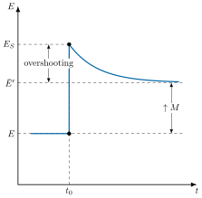
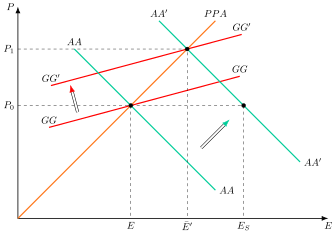
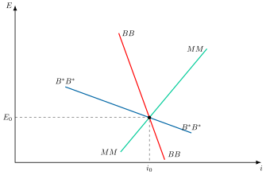
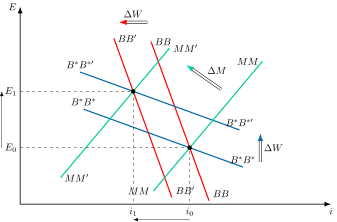

Apuntes para la oposición al Cuerpo de Diplomados Comerciales del Estado
21 El mercado de divisas: operaciones e instrumentos. Teorías de la determinación del tipo de cambio.
Tema pendiente de revisión. Este tema está publicado pero aún no lo he revisado a fondo: puede contener erratas o partes por pulir.
21.1 Introducción  1'
1'
En los últimos años, el mercado de divisas ha registrado movimientos extraordinarios. El dólar estadounidense se apreció con fuerza hasta 2022 y se depreció en 2025.1 El yen japonés también se depreció de forma marcada. Estos episodios ponen de manifiesto la complejidad de los factores que impulsan los tipos de cambio.
Este dinamismo es un reflejo del mercado de divisas, o Forex, el mercado financiero más grande y líquido del mundo, que negoció 9,6 billones de dólares diarios en abril de 2025, un 28% más que en 2022, según la encuesta trienal del BIS (Banco de Pagos Internacionales) (BIS 2025, 5).
Así, la determinación del precio de una divisa, conocido como tipo de cambio, es un pilar fundamental para la estabilidad económica. Comprender sus fluctuaciones no es solo importante para inversores, también es crucial para la política monetaria, la gestión de la deuda externa y la competitividad de las exportaciones.
De esta forma, las teorías de determinación del tipo de cambio, desde la paridad del poder adquisitivo hasta los modelos de activos, no solo explican estos movimientos, sino que también proporcionan las herramientas necesarias para gestionar sus impactos en una economía global interconectada.
Por consiguiente, el objetivo de esta exposición será el estudio del mercado de divisas y la determinación del tipo de cambio a través del siguiente esquema:
Características generales de los mercados de divisas.
Teorías tradicionales: flujos y paridades.
Teorías avanzadas: modelos de activos.
Desarrollos recientes: expectativas y evidencia empírica.
21.2 Características generales de los mercados de divisas 4'
La divisa es todo medio de pago denominado en moneda extranjera2. El tipo de cambio es el precio de la divisa.
En función de su convertibilidad, según el FMI se distingue entre:
Divisas convertibles: aquellas que sus tenedores pueden cambiar libremente por otras monedas, sin restricciones ni discriminación, al menos para los pagos por operaciones corrientes34.
Divisas no convertibles: aquellas que no se pueden cambiar libremente por existir controles de cambios.
En función de las operaciones, se distingue entre:
Operaciones de la cuenta corriente: el convenio constitutivo del FMI prohíbe las restricciones a las operaciones de cuenta corriente.
Operaciones de la cuenta financiera: el convenio constitutivo del FMI permite los controles de capitales, siempre que no restrinjan los pagos por operaciones corrientes.
Asimismo, se considera moneda vehicular a la moneda ampliamente utilizada para establecer contratos efectuados por partes que no residen en el país emisor de la moneda vehicular (por ejemplo, el euro y el dólar). En la práctica en el mercado de divisas, el objeto de negociación son pares de divisas.
Tipos de cambio
Como se ha señalado, el tipo de cambio es el precio de la divisa, pero es necesario distinguir entre diferentes tipos de cambio:
Tipo de cambio nominal (\(E\)): es el precio de una divisa en términos de otra. Según qué moneda se tome como base, se distingue entre:
Tipo de cambio directo o continental (€/$): número de unidades de moneda nacional necesarias para adquirir una unidad de moneda extranjera (si el tipo aumenta, la moneda nacional se deprecia).
Este es el que se utiliza a lo largo de la exposición (y del temario). Siendo \(P\) y \(P^{*}\) los niveles de precios nacional y extranjero, la paridad del poder adquisitivo (que se verá más adelante) lo iguala al cociente \(P/P^{*}\), ya que: \[E\cdot P^{*}=P \tag{21.1}\]Tipo de cambio inverso o americano ($/€): nº de unidades de moneda extranjera necesarias para adquirir una unidad de moneda nacional (si el tipo aumenta, la moneda nacional se aprecia).
Es el tipo de cambio que utilizan publicaciones como el Financial Times, The Economist, etc. Es el utilizado generalmente en las coyunturas (americano de base 100)5. Bajo la misma paridad, equivale a \(P^{*}/P\).Tipos de cambio cruzados (cross rates): son los tipos de cambio para dos divisas implícitos en los tipos de cambio para cada una de esas divisas con relación a otra divisa.
Por ejemplo, el tipo de cambio entre dólares y libras esterlinas y el tipo de cambio entre el dólar y el yen implican el tipo de cambio entre la libra esterlina y el yen. Precisamente, la importancia del dólar deriva, en parte, de que es la moneda de referencia utilizada para calcular los tipos cruzados. Así, para calcular el tipo de cambio \(\pounds-\yen\), \(E_{\pounds,\yen}\), se pueden cambiar libras por dólares al tipo \(E_{\pounds,\$}\) y a continuación, dólares por yenes al tipo \(E_{\$,\yen}\). Esto puede expresarse de la siguiente manera: \(E_{\pounds,\yen}=E_{\pounds,\$}\cdot E_{\$,\yen}\)
Tipo de cambio real (e): es el precio relativo de los bienes de un país extranjero en términos de bienes nacionales. Mide el poder adquisitivo de una divisa frente a otra, de modo que, si \(e\) aumenta, los bienes extranjeros se encarecen y la moneda nacional se deprecia en términos reales: \[e=\dfrac{E\cdot P^{*}}{P} \tag{21.2}\]
Tipo de cambio efectivo nominal: es una media ponderada de los tipos de cambio nominales bilaterales, donde la ponderación de cada tipo de cambio depende del volumen de comercio con el país extranjero en cuestión. Este tipo de indicador permite resumir las fluctuaciones de todos los tipos de cambio que afectan al comercio de un país.6
Tipo de cambio efectivo real: se calcula como el tipo de cambio efectivo nominal, pero ajustándolo por las variaciones en el índice de precios de cada país. El tipo de cambio efectivo real mide el poder adquisitivo de la moneda nacional en el extranjero: con el tipo directo del temario, si aumenta, la moneda nacional pierde poder adquisitivo.
Agentes
Originalmente, los participantes en el mercado de divisas eran comerciantes de bienes y servicios puesto que como la mayoría de las economías acuñaban sus propias monedas, el comercio internacional exigía a la par un intercambio de divisas.
Desde entonces, las operaciones de intercambio de monedas se han ido expandiendo hasta incluir operaciones de especulación, cobertura y arbitraje, hecho que ha agrandado la lista de agentes intervinientes en el mercado. Los operadores principales, con la terminología de la encuesta trienal del BIS, son los siguientes:
Los grandes bancos comerciales y de inversión actúan como dealers o creadores de mercado, responsables del 46% del volumen de negocio (4,4 billones de dólares diarios en 2025) en el mercado de divisas (BIS 2025, 8). Su función principal es dar liquidez al mercado, actuando como intermediarios entre la oferta y la demanda, y cotizando continuamente precios de compra y venta7.
Aunque no tienen una obligación formal de proveer liquidez, lo hacen para mantener su reputación. Operan entre sí en el mercado interdealer, una red electrónica que es fundamental para la liquidez. Estos bancos, aunque alrededor de 2000 participan activamente, están dominados por alrededor de 200 "creadores de mercado". Sus beneficios provienen de los diferenciales entre los precios de compra y venta (bid-offer spread) y de las comisiones que cobran8.Un bróker actúa como un intermediario entre compradores y vendedores de divisas, a diferencia de los dealers, no asume riesgos propios ni toma posiciones abiertas9. Su modelo de negocio se basa en el cobro de comisiones por sus servicios.
El bróker funciona recibiendo las ofertas de precios de compra (bid) y venta (ask) de los dealers10, seleccionando las mejores y ofreciéndolas a sus clientes. Esto permite que inversores más pequeños accedan a precios competitivos a los que no tendrían acceso directo. Aunque hay alrededor de 100 brókeres de importancia, la mayoría se concentra en Londres.Otras instituciones financieras, responsables del 50% de las operaciones en 2025 (BIS 2025, 9). Incluye todas aquellas instituciones financieras que no se clasifican como dealers, por lo que se trata de un grupo muy heterogéneo: bancos no declarantes (sobre todo bancos regionales pequeños, el 24% del total), inversores institucionales, como fondos de pensiones y compañías de seguros (13%), hedge funds11 y firmas de trading propio (el 8% entre ambos), etc. Su relación con el mercado de divisas se deriva del proceso creciente de diversificación internacional y de los fondos de inversión.
El sector oficial, compuesto por los bancos centrales y fondos soberanos, representa el 1,4% del volumen de operaciones en el mercado de divisas (el BIS lo incluye dentro de las otras instituciones financieras). Sin embargo, su importancia es crucial por su papel regulador, señalizador y supervisor. Su actividad se relaciona con la política cambiaria y la gestión de reservas. Realizan operaciones con otros organismos y también de intervención para influir en los tipos de cambio, obteniendo beneficios principalmente a través de la diversificación que les permite el mercado de divisas.
Los agentes no financieros (empresas y particulares) operan en el mercado de divisas a través de bancos, representando el 5% del volumen. Su participación se debe a operaciones comerciales o financieras, buscando cubrirse del riesgo de tipo de cambio. Gracias a la tecnología (internet)12, los particulares han mejorado su acceso, pero su poder de negociación sigue siendo limitado.
Los operadores de alta frecuencia utilizan sistemas de trading algorítmicos, programas informáticos que ejecutan estrategias en el mercado de divisas sin intervención humana. El High-Frequency Trading (HFT) se basa en algoritmos complejos que realizan operaciones en milisegundos. La velocidad es crucial, por lo que estos operadores sitúan sus servidores geográficamente cerca de las plataformas de trading para ganar una ventaja de milésimas de segundo, que aprovechan con el llamado arbitraje13 por latencia. Su ventaja radica en obtener beneficios de las pequeñas discrepancias de precios que se producen entre diferentes plataformas en línea.
Ejemplos: Citadel Securities, Virtu Financial, Two Sigma, Jump Trading, y Tower Research Capital.
Características del Forex
El Forex se caracteriza por:
Mercado más grande del mundo: El mercado de divisas es el de mayor volumen de transacciones diarias, 9,6 billones de dólares diarios en abril de 2025 según la encuesta trienal del BIS (BIS 2025, 5).
Alta concentración: El dólar interviene en el 89% de las operaciones (el euro, en el 29%, y el yen, en el 17%), ya que cada operación implica dos monedas y las cuotas suman el 200%. Geográficamente, cuatro centros concentran el 75% de la negociación: Reino Unido (38%), Estados Unidos (19%), Singapur (12%) y Hong Kong (7%) (BIS 2025, 7 y 10).
Características operativas: Es un mercado extrabursátil (OTC, Over-the-Counter14) e interbancario, dominado por operaciones entre entidades financieras (alrededor del 95% de las contrapartes) con fines de diversificación y especulación.
Eficiencia y continuidad: Es un mercado continuo que opera 24 horas al día. Gracias a su informatización y a redes de arbitraje, las cotizaciones se mantienen unificadas entre las diferentes plazas.
Naturaleza del mercado: Es relativamente "perfecto" en cuanto a que los agentes tienen poco poder de mercado, aunque está concentrado en un pequeño número de operadores que fijan precios (alrededor de 200 market-makers).
Tecnología clave: Se apoya en sistemas de información (Reuters, Bloomberg), de negociación electrónica (EBS), de compensación y liquidación (CHIPS, T2 y CLS) y de transferencia electrónica (SWIFT), que garantizan la liquidez y reducen el riesgo de contraparte.15
Funciones
Las principales funciones del mercado de divisas son:
Facilitar las transferencias de poder adquisitivo de un país a otro mediante la homogeneización de las transacciones monetarias internacionales (por ejemplo, si un inversor desea invertir en España, antes necesita conseguir euros).
Protección frente al riesgo de tipo de cambio asociado a pagos o cobros futuros (segmento forward del mercado de divisas).
Proporcionar financiación a las transacciones comerciales internacionales.
Operaciones
El mercado de divisas se divide en dos segmentos según la fecha de entrega.
Las operaciones al contado (mercado spot) implican la compra-venta de divisas con una fecha de entrega en dos días hábiles o menos. Constituyen el 31% de las operaciones, unos 3 billones de dólares diarios en 2025, con transacciones que se liquidan al tipo de cambio spot (BIS 2025, 6).
Las operaciones a plazo (mercado forward) se negocian con un plazo de entrega de más de dos días hábiles. Incluyen los outright forwards (el 19% del total), los swaps de divisas (42%) y las opciones y otros productos (7%). Los outright forwards son contratos por los que dos partes se obligan a intercambiar, en una fecha futura, una cantidad de divisa a un tipo de cambio fijado hoy. A mayor plazo, el diferencial de precios (bid-ask spread) suele ser mayor.
Según el objetivo de la operación, estas se pueden clasificar tradicionalmente en:
Comerciales y de cobertura, derivadas de transacciones reales o destinadas a eliminar el riesgo cambiario de cobros o pagos futuros.
De arbitraje, consisten en la compra y venta simultánea de una divisa (es decir, posición cerrada) en diferentes mercados con el objetivo de obtener un beneficio sin riesgo, aprovechando diferencias en precios entre mercados (instrumentos spot) o entre horizontes temporales (instrumentos forward).
De especulación, consisten en acudir al mercado de divisas y tomar posiciones abiertas (es decir, asumir riesgo cambiario) con la intención de guiarse por sus expectativas para obtener beneficios.
Por otro lado, la innovación financiera de las últimas décadas ha tenido dos facetas:
La innovación de proceso, que ha usado las nuevas tecnologías para reducir costes y acelerar las transacciones, y
La innovación de producto, que ha creado nuevos instrumentos financieros. Debido a la volatilidad y a la libre circulación de capitales, se han desarrollado los derivados.
Así, los derivados son productos que permiten transferir el riesgo de un activo subyacente16 sin tener que transferir el activo mismo, un concepto que se ha extendido al mercado de divisas. Se distingue entre:
Futuros17, un futuro financiero es un contrato realizado en un mercado organizado por el que las partes acuerdan hoy la compraventa futura de una cantidad concreta del activo subyacente (divisa) a un precio convenido (tipo de cambio) de antemano.
Opciones, 7%, una opción financiera es un contrato que da a su comprador el derecho, pero no la obligación, de comprar o vender bienes o valores (en este caso, divisas), a un tipo de cambio determinado (strike) en/hasta una fecha concreta (vencimiento).
Swaps de divisas (FX swaps), 42%, se trata de contratos de permuta que incluyen dos operaciones entre dos partes: una compraventa de divisas en el momento actual al tipo de cambio spot (spot leg) y una compraventa futura en sentido contrario de las mismas divisas en una fecha concreta al tipo de cambio forward (long leg). Tienen dos fases (legs) que corresponden a una transacción al contado y una a plazo. Son instrumentos de vencimiento mayoritariamente corto (hasta siete días) y se utilizan para gestionar la liquidez de financiación en divisas y cubrir el riesgo cambiario (BIS 2025, 6 y 7).
Swaps de monedas (currency swaps), alrededor del 2%, en los que se intercambian principal e intereses en dos monedas durante un período más largo. Se utilizan sobre todo para gestionar necesidades de financiación a más largo plazo en distintas monedas y para cubrir el riesgo cambiario (BIS 2025, 7).
21.3 Teorías tradicionales: Flujos y paridades 5'30"
Descrito cómo funciona el mercado, queda la pregunta de qué determina el precio que en él se forma. Tras la crisis del patrón oro, se creó en 1944 un nuevo sistema por el cual los países fijaban su tipo de cambio respecto al dólar. En los años cincuenta y sesenta se desarrollaron los modelos de flujos, donde el valor del tipo de cambio sería aquel que equilibrase la oferta y la demanda de divisas, fundamentalmente determinadas por las exportaciones e importaciones de bienes y servicios.
Así, hasta 1973, el enfoque predominante de determinación del tipo de cambio fue el de flujos, que reunía el modelo de balanza de pagos con ideas anteriores como la PPA y las paridades de intereses. Según este enfoque, el tipo de cambio varía para igualar variables flujo (estas teorías han perdido vigencia, pero son el punto de partida de las teorías modernas):
Modelo de balanza de pagos: el tipo de cambio se ajusta para igualar la oferta y la demanda de divisas. Se refiere tanto a los flujos de bienes como de capitales.
Modelo de la PPA: el tipo de cambio se ajusta para igualar el poder de compra de las monedas. Se refiere a los flujos de bienes.
Modelos de las paridades de intereses: el tipo de cambio se ajusta para igualar las rentabilidades de inversión en activos nacionales y extranjeros. Se refiere a los flujos de capitales.
Modelo de la balanza de pagos
En este modelo se distinguen 3 posibilidades:
\(BP=0\): La oferta y demanda de divisas están equilibradas, manteniendo el tipo de cambio constante.
\(BP>0\): La oferta de divisas supera la demanda, debido a que las exportaciones o las entradas de capital son mayores. Para reequilibrar la balanza, la divisa extranjera se deprecia (la moneda nacional se aprecia).
\(BP<0\): La demanda de divisas es mayor que la oferta, ya que las importaciones o las salidas de capital son superiores. Para alcanzar el equilibrio, la divisa extranjera se aprecia (la moneda nacional se deprecia).
Los determinantes del tipo de cambio son los factores que afectan la oferta y demanda de divisas: las exportaciones e importaciones de bienes, servicios y capital.
Esta teoría se alinea con la observación de que las economías con grandes déficits comerciales experimentan depreciación de su moneda18. Sin embargo, no siempre se cumple en países desarrollados como EE. UU.
Modelo de la paridad de poder adquisitivo (PPA)
La Paridad del Poder Adquisitivo (PPA), originada en la Escuela de Salamanca (s.XVI – XVII) y popularizada por Gustav Cassel (1918), postula que una misma cesta de bienes debe costar lo mismo en cualquier país.19 El tipo de cambio nominal se ajusta para igualar el poder de compra de las monedas.
Se distingue entre:
La versión absoluta de la PPA, los niveles de precios determinan el nivel del tipo nominal.
La versión relativa de la PPA, las tasas de variación de los precios, es decir, la inflación, determinan la tasa de variación del tipo nominal.
Versión absoluta de la PPA
Se basa en los siguientes supuestos:
Bienes homogéneos y comercializables, con las mismas ponderaciones en las cestas de ambos países.
Libre movilidad de bienes (es decir, sin barreras al comercio ni costes de transporte).
Mercados perfectamente competitivos (es decir, las empresas no tienen poder de mercado y, por lo tanto, no pueden recurrir a estrategias como la discriminación de precios).
Información perfecta y simétrica.
Dados los anteriores supuestos, no habría oportunidades de arbitraje, por lo que se impone la “ley del precio único”2021: los niveles de precios, ajustados por el tipo de cambio, serán iguales en todos los países: \[P=E\cdot P^{*}\rightarrow E=\dfrac{P}{P^{*}}=\dfrac{\sum_{i}\alpha_{i}\cdot P_{i}}{\sum_{i}\alpha_{i}\cdot P^{*}_{i}} \tag{21.3}\] donde \(P\) y \(P^{*}\) son índices de precios construidos con las mismas ponderaciones \(\alpha_{i}\) de cada bien \(i\).
Interpretación: cuanto mayor sea el nivel de precios relativo de un país, más depreciada deberá estar su moneda para mantener la igualdad del poder adquisitivo.
La versión absoluta, sin embargo, es demasiado restrictiva, ya que en la práctica los supuestos antes mencionados no se dan (existen barreras al comercio, los bienes no son homogéneos, etc.).
Versión relativa de la PPA
Para solucionar los problemas de la versión absoluta de la PPA, se puede plantear una versión relativa.
Idea: en la medida en que las limitaciones mencionadas permanezcan constantes a lo largo del tiempo, los diferenciales de inflación determinarán las variaciones del tipo de cambio: \[\begin{align*} E=\dfrac{P}{P^{*}}\underset{\ln}{\rightarrow}\ln E=\ln P-\ln P^{*}\underset{\partial t}{\rightarrow}\gamma E=\gamma P-\gamma P^{*} \end{align*}\] donde \(\gamma X\) denota la tasa de variación de la variable \(X\), y \(\pi\) y \(\pi^{*}\) las tasas de inflación nacional y extranjera, por lo que \[\gamma E=\pi-\pi^{*} \tag{21.4}\] así, la variación porcentual del tipo de cambio va a depender de la diferencia entre las variaciones porcentuales de los precios (es decir, de los diferenciales de inflación).
Por tanto, según esta versión, países con altas tasas de inflación (comparadas con el resto del mundo) verán su tipo de cambio depreciarse.
Conclusión y evidencia empírica
En suma, según el modelo de la paridad del poder adquisitivo, los determinantes del tipo de cambio nominal son los niveles o las variaciones porcentuales de los precios.
Consecuencia teórica del cumplimiento de la teoría de la paridad del poder adquisitivo:
Si se cumple la versión absoluta, entonces el tipo de cambio real (que es el precio relativo de la cesta de bienes extranjera en relación a la nacional) es igual a la unidad: \[e=\dfrac{E\cdot P^{*}}{P}=1\]
Si se cumple la versión relativa, entonces el tipo de cambio real es constante: \[\gamma e=\gamma E+\pi^{*}-\pi=0\]
Sin embargo, la evidencia empírica22 que resumieron Taylor y Taylor (2004) apuntó a lo siguiente:
La PPA no se cumple a corto plazo. En el largo plazo, la PPA relativa tiende a sostenerse, de modo que las variaciones del tipo de cambio nominal se explican en buena medida por los diferenciales de inflación. Aun así, el ajuste es muy lento: las desviaciones respecto a la PPA tienen una semivida de entre tres y cinco años (Rogoff 1996), es decir, ese es el tiempo que tarda en desaparecer la mitad de un shock.
Rogoff (1996) llamó “misterio de la PPA” a la combinación de dos hechos: la enorme volatilidad del tipo de cambio real a corto plazo y la extrema lentitud con la que los shocks se disipan.
El incumplimiento de la PPA se debe a que no se cumplen sus supuestos: existen barreras al comercio, los bienes no son homogéneos, no todos son comercializables y hay diferencias en la productividad.
El modelo de Balassa-Samuelson demuestra por qué los bienes no comercializables (servicios) causan el fallo de la PPA (Balassa 1964; Samuelson 1964). Si la productividad de las manufacturas crece más que la de los servicios, y esa diferencia es mayor que en el extranjero, los salarios suben en toda la economía. Esto provoca un alza desproporcionada de precios en el sector servicios, generando una apreciación del tipo de cambio real que explica por qué los países ricos tienen precios más altos y por qué el índice Big Mac muestra disparidades23.
Este modelo explica las desviaciones de la PPA que persisten a largo plazo (pues la productividad varía lentamente con el paso del tiempo), pero no sus fluctuaciones a corto plazo.
Modelos de las paridades de intereses (PCI y PDI)
Según los modelos de paridades de intereses, el tipo de cambio se ajusta para igualar la rentabilidad de invertir en activos domésticos y extranjeros, es decir, para que no existan oportunidades de arbitraje (PCI) ni de especulación (PDI).
La PCI solo exige libre movilidad de capitales, sin controles ni costes de transacción relevantes. La posición está cubierta en el mercado a plazo y, por tanto, no soporta riesgo cambiario. La PDI exige además:
Sustituibilidad perfecta de activos nacionales e internacionales.
Neutralidad al riesgo de los agentes.
Paridad cubierta de intereses, PCI
La paridad cubierta de intereses es la condición según la cual el diferencial de tipos de interés entre dos monedas es igual al margen forward (la prima o el descuento a plazo de la divisa), de modo que invertir en el extranjero con cobertura rinde lo mismo que invertir en el propio país. Esta paridad se impone mediante el arbitraje temporal24: aprovechar las diferencias de precios de una misma divisa en diferentes plazos.
Sea un inversor que posee una determinada cantidad de su moneda nacional y quiere invertirla en un activo financiero. Tiene 2 opciones:
Invertir 1 u.m. nacional en un activo nacional, que paga el tipo de interés \(i\), con lo que obtendría \((1+i)\) de rendimiento bruto.
Invertir 1 u.m. nacional en un activo extranjero, para lo que sería necesario:
Comprar moneda extranjera hoy al tipo spot actual, \(E_{S}\): por 1 u.m. nacional se obtienen \(1/E_{S}\) u.m. extranjeras.
Invertir \(1/E_{S}\) u.m. extranjeras en el país extranjero, al tipo de interés \(i^{*}\), con lo que se obtendría \(\frac{1}{E_{S}}\cdot(1+i^{*})\).
Vender a plazo, al tipo forward \(E_{F}\), los ingresos previstos (en moneda extranjera) a cambio de moneda nacional, con lo que se obtendría \(\frac{E_{F}}{E_{S}}\cdot(1+i^{*})\).
Invirtiendo en el activo extranjero se obtiene por tanto el siguiente diferencial: \[Diff=\dfrac{E_{F}}{E_{S}}\cdot\left(1+i^{*}\right)-\left(1+i\right) \tag{21.5}\]
Se define ahora el margen forward, \(MF\), como la prima (o el descuento) a plazo de la divisa: la tasa a la que el tipo de cambio a plazo supera al spot (es decir, la tasa a la que la moneda nacional se deprecia a plazo), donde \(E\) es el tipo de cambio directo de la moneda nacional: \[MF=\dfrac{E_{F}-E_{S}}{E_{S}} \tag{21.6}\]
Así:
Si el \(MF\) es positivo, la divisa está a premio porque cotiza más cara a plazo que al contado (si \(E_{F}>E_{S}\), la moneda nacional se deprecia a plazo). La moneda nacional, pues, estará al descuento.
Si el \(MF\) es negativo, la divisa está al descuento porque cotiza más barata a plazo. La moneda nacional, pues, estará a premio25.
El diferencial de rentabilidad se puede aproximar entonces a la siguiente expresión: \[Diff=MF+\left(i^{*}-i\right) \tag{21.7}\]
Se observa, pues, que el inversor en divisa extranjera tiene una doble fuente de rentabilidad:
La depreciación de la moneda nacional frente a la divisa.
El diferencial de tipos de interés.
Si el diferencial es positivo, un inversor obtendrá una ganancia positiva con certeza (es decir, arbitrando) invirtiendo en el activo extranjero. Es decir, comprará divisas hoy (al tipo spot actual), invertirá en activos extranjeros y se cubrirá del riesgo del tipo de cambio vendiendo a plazo la divisa que recibirá al vencimiento (al tipo forward fijado). Lo contrario ocurrirá si es negativo26.
Es decir, si el diferencial no es nulo, existirán oportunidades de arbitraje financiero.
Por tanto, el tipo de cambio debe moverse de forma que el diferencial se anule, caso en el que se cumplirá la paridad cubierta de intereses (PCI)27: \[i=MF+i^{*} \tag{21.8}\]
Por tanto:
El inversor estará indiferente entre invertir en el activo extranjero o hacerlo en el activo nacional.
Si \(i>MF+i^{*}\), entrarán capitales en el país, la moneda se apreciará hoy (\(\downarrow E_{S}\)), y aumentará el margen forward (\(\uparrow MF\)) hasta que se cumpla la PCI y se elimine el arbitraje.
Conclusión
El arbitraje garantiza, en teoría, el cumplimiento continuo de la PCI y de la ley del precio único en los mercados de divisas.
Evidencia empírica
Antes de la crisis financiera global, la PCI se cumplía con gran precisión: la diferencia entre el tipo a plazo y el tipo al contado era aproximadamente igual al diferencial de tipos de interés entre países, y los programas informáticos28 de las instituciones de inversión hacían que los diferenciales de rentabilidad durasen muy poco tiempo. Desde 2008, en cambio, aparecen desviaciones sistemáticas y persistentes, la llamada base cruzada (cross-currency basis), que Du et al. (2018) relacionaron con la regulación bancaria y con los balances de los bancos a final de trimestre. Los incumplimientos de la PCI están relacionados con:
La ruptura del supuesto de libre movilidad de capitales.
La existencia de comisiones y costes de transacción (de manera que, por ejemplo, el arbitrajista no intervendrá si el diferencial de cotización –beneficios– es menor que la comisión que tiene que pagar).
Las restricciones regulatorias y de balance de los bancos, que limitan el capital disponible para arbitrar.
Paridad descubierta de intereses, PDI29
La especulación en el mercado spot parte de un contexto similar al de la paridad cubierta de intereses, pero, en este caso, el inversor está dispuesto a asumir riesgo cambiario, por lo que cambiará su retorno en divisa por moneda nacional cuando la inversión venza al tipo de cambio vigente en dicho momento del tiempo.
En este caso, el tipo de cambio apropiado será el tipo de cambio spot futuro (o esperado). No obstante, en el momento de realizar la inversión este aún no se conoce con certeza, por lo que el inversor tomará sus decisiones según sus expectativas sobre dicho tipo de cambio.
Realizando el mismo razonamiento lógico que antes, pero cambiando el tipo de cambio forward por el tipo de cambio spot esperado, \(E^{e}_{S}\), se obtiene el diferencial: \[Diff=\dfrac{E^{e}_{S}}{E_{S}}\cdot\left(1+i^{*}\right)-\left(1+i\right) \tag{21.9}\]
Se define ahora la tasa de depreciación esperada, \(TDE\), como la tasa a la que se espera que la divisa gane valor respecto a la moneda nacional (es decir, la tasa a la que se espera que la moneda nacional se deprecie), donde, de nuevo, E es el tipo de cambio directo de la moneda nacional: \[TDE=\dfrac{E^{e}_{S}-E_{S}}{E_{S}} \tag{21.10}\]
El diferencial de rentabilidad se puede aproximar entonces a la siguiente expresión: \[Diff=TDE+\left(i^{*}-i\right) \tag{21.11}\]
De nuevo, se observa la doble fuente de rentabilidad del inversor en divisa extranjera.
Si el diferencial es positivo, un inversor obtendrá una ganancia positiva sin certeza (es decir, especulando) invirtiendo en el activo extranjero. Es decir, comprará divisas hoy (al tipo spot actual), invertirá en activos extranjeros y comprará moneda nacional en el futuro (al tipo spot futuro).
Lo contrario ocurrirá si es negativo.
Así, si el diferencial no es nulo, existirán oportunidades de especulación financiera.
Por tanto, el tipo de cambio debe moverse de forma que el diferencial se anule, caso en el que se cumplirá la paridad descubierta de intereses (PDI) –también conocida como “efecto Fisher internacional”–30: \[i=TDE+i^{*} \tag{21.12}\] es decir, de nuevo, el inversor estará indiferente entre invertir en el activo extranjero o hacerlo en el activo nacional.
De esta forma:
Si \(Diff>0\): Los inversores preferirán invertir en activos extranjeros al tipo spot, dado que se espera una depreciación del tipo de cambio mayor a la dada por la PDI y por lo tanto se obtendrían beneficios en el futuro intercambiando moneda extranjera por nacional. Si el diferencial es negativo, ocurre lo contrario.
Si \(i>TDE+i^{*}\), entrarán capitales en el país, la moneda se apreciará hoy (\(\downarrow E_{S}\)), y aumentará la tasa de depreciación esperada hasta que se cumpla la PDI y se elimine la especulación.
Esto también implica que los tipos de interés diferirán en la tasa de variación esperada del tipo de cambio: \[i-i^{*}=TDE \tag{21.13}\]
Conclusión
La especulación garantiza, en teoría, el cumplimiento continuo de la PDI.
Evidencia empírica
La PDI no se cumple a corto plazo. Si se contrasta con una regresión de la variación del logaritmo del tipo de cambio, \(s=\ln E\), sobre el diferencial de tipos de interés: \[s_{t+k}-s_{t}=\alpha+\beta\left(i_{t}-i^{*}_{t}\right)+\varepsilon_{t+k} \tag{21.14}\] donde \(k\) es el horizonte, \(\alpha\) una constante, \(\beta\) el coeficiente del diferencial y \(\varepsilon\) el error de predicción, la PDI implica \(\alpha=0\) y \(\beta=1\). Sin embargo, las estimaciones de \(\beta\) son más cercanas a menos uno que a más uno con tipos de cambio frente al dólar.31 Es el llamado puzle de la prima a plazo (forward premium puzzle), que recogen estudios como el de Fama (1984): cuanto mayor es el tipo de interés nacional respecto al extranjero, la moneda nacional tiende a depreciarse menos e incluso a apreciarse, y no a depreciarse más, como predice la PDI. Se han propuesto varias explicaciones:
Una explicación es que no se cumple el supuesto inicial de neutralidad al riesgo de los agentes. Y es que en la PDI hay riesgo, de manera que, si los agentes son, en realidad, aversos, asumirán el riesgo cambiario a cambio de una prima de riesgo, es decir, asumirán el riesgo si la rentabilidad esperada que reciban de los activos extranjeros es igual a la rentabilidad esperada de los activos nacionales más una prima. Las divergencias respecto de la PDI podrían reflejar por tanto esta prima de riesgo.
Sin embargo, algunos estudios estiman que las divergencias son muchas veces mayores que una hipotética prima de riesgo, por lo que en este caso las divergencias podrían deberse a expectativas sesgadas o, al menos, aparentemente sesgadas. Una explicación de lo segundo es que, si los inversores esperan racionalmente una súbita depreciación pero no saben cuándo ocurrirá, mientras esta no ocurra los datos mostrarán desviaciones respecto de la PDI (“peso problems”).
Carry trade
En el mercado spot, además de las operaciones de especulación relacionadas con la paridad descubierta de intereses, también se llevan a cabo operaciones de carry trade, que consisten en endeudarse en una moneda de bajos tipos de interés para invertir en activos denominados en una moneda con altos tipos de interés32. El carry trade explota precisamente este puzle: obtiene el diferencial de tipos mientras la moneda de tipo alto no se deprecie lo que exige la PDI.
Ejemplo: un inversor se endeuda (por ejemplo, con un préstamo) en yenes (que tienen un tipo de interés bajo) y con esos yenes compra dólares americanos con los que invertir en activos rentables estadounidenses. Lo que ocurre es que, al vender yenes y comprar dólares, se produce una depreciación del yen y una apreciación del dólar (es decir, la moneda con mayor tipo de interés se apreciará por la entrada de capitales).33
21.4 Teorías avanzadas: Modelos de activos (stocks) 7'
Tras la ruptura de Bretton Woods en 1973, con tipos de cambio flotantes y creciente movilidad de capitales, el tipo de cambio pasa a verse como el precio de un activo y el enfoque de los flujos se ve reemplazado por el de los stocks. La PPA y la paridad descubierta de intereses no desaparecen: son piezas de los modelos monetarios que siguen. El tipo de cambio se determina en el proceso que equilibra la demanda y la oferta de activos financieros en cada país:
Modelos monetarios: el tipo de cambio depende principalmente del stock de dinero.
Modelo de cartera: el tipo de cambio depende del stock de dinero y de los stocks de otros activos financieros.
Modelos monetarios
En estos modelos, el tipo de cambio depende sobre todo del stock de dinero. Se distingue entre precios flexibles y precios rígidos.
Precios flexibles
Los precios se ajustan instantáneamente a los cambios económicos.
Enfoque de la teoría cuantitativa del dinero
Este enfoque parte de la teoría cuantitativa del dinero y concede mucha importancia a la oferta de dinero en la determinación del tipo de cambio, lo que de alguna manera estaría en línea con la teoría de la paridad del poder adquisitivo, según la cual en el largo plazo el tipo de cambio depende de los precios (y es que, bajo la teoría cuantitativa del dinero, estos dependen a su vez de la oferta monetaria).
Se parte de la teoría cuantitativa del dinero, según la cual en el largo plazo se cumple (con \(M\) la oferta monetaria, \(V\) la velocidad de circulación del dinero, \(P\) el nivel de precios e \(Y\) la renta real, y el asterisco para el extranjero): \[M\cdot V=P\cdot Y,\quad M^{*}\cdot V^{*}=P^{*}\cdot Y^{*} \tag{21.15}\] por lo que combinando \(E=P/P^{*}\) con estas dos ecuaciones, se puede obtener la ecuación básica del modelo monetario de determinación del tipo de cambio: \[E=\dfrac{M\cdot V\cdot Y^{*}}{M^{*}\cdot V^{*}\cdot Y} \tag{21.16}\]
Enfoque de Frenkel y Mussa
Este enfoque, desarrollado por Frenkel (1976) y Mussa (1976) en artículos independientes, al igual que el anterior, concede también mucha importancia a la oferta de dinero, pero se diferencia en que no parte de la teoría cuantitativa del dinero, sino de la condición de equilibrio del mercado de dinero (o monetario).
Supuestos: los mismos que los del modelo anterior + bonos perfectamente sustitutivos (sustituibilidad perfecta de activos nacionales y extranjeros)34.
El equilibrio en el mercado de dinero requiere que \(M^{S}=M^{D}\):
Se consideran saldos reales (esto es \(M/P\) en lugar de \(M\)), y se supone que la demanda de saldos reales tiene elasticidad constante respecto a la renta real, de la que depende positivamente, y semielasticidad constante respecto al tipo de interés, del que depende negativamente: \[\left(\dfrac{M}{P}\right)^{D}=Y^{k}\cdot\exp\left(-h\cdot i\right) \tag{21.17}\]
Tomando logaritmos neperianos, se obtiene (las letras minúsculas representan el logaritmo de su mayúscula, con excepción del tipo de interés, que entra en nivel porque la función de demanda de dinero es semilogarítmica): \[\begin{aligned} m-p & =k\cdot y-h\cdot i\\ m^{*}-p^{*} & =k^{*}\cdot y^{*}-h^{*}\cdot i^{*} \end{aligned} \tag{21.18}\]
Como se ha supuesto que se cumple la paridad del poder adquisitivo en su versión absoluta (\(E=P/P^{*}\)), tomando logaritmos neperianos se obtiene (\(s\) denota el logaritmo neperiano del tipo de cambio nominal, \(E\), que no hay que confundir con el tipo de cambio real, \(e\)): \[s=p-p^{*} \tag{21.19}\]
Combinando las tres ecuaciones anteriores y suponiendo, para simplificar, que la elasticidad y la semielasticidad son iguales en ambos países (\(k=k^{*}\) y \(h=h^{*}\)), se puede obtener la ecuación básica del modelo monetario de determinación del tipo de cambio: \[s=\left(m-m^{*}\right)-k\cdot\left(y-y^{*}\right)+h\cdot\left(i-i^{*}\right) \tag{21.20}\] donde \(s\) es el logaritmo del tipo de cambio nominal, \((m-m^{*})\) y \((y-y^{*})\) representan, respectivamente, las diferencias de los logaritmos en la cantidad de dinero y en la renta, y \((i-i^{*})\) es la diferencia del tipo de interés nominal.
Como también se ha supuesto que se cumple la paridad descubierta de intereses (\(TDE=i-i^{*}\)), puede combinarse con la paridad del poder adquisitivo en su versión relativa, en términos esperados (\(TDE=\pi^{e}-\pi^{*e}\))35, para obtener \(i-i^{*}=\pi^{e}-\pi^{*e}\) y reescribir la ecuación básica como: \[s=\left(m-m^{*}\right)-k\cdot\left(y-y^{*}\right)+h\cdot\left(\pi^{e}-\pi^{*e}\right) \tag{21.21}\]
Por consiguiente, según el enfoque de Frenkel y Mussa, los determinantes del tipo de cambio nominal son:
Diferencial de Oferta Monetaria, \(\left(m-m^{*}\right)\), depreciación: Un aumento de la oferta monetaria de un país en relación con otro causa la depreciación de su moneda36. Esto se debe a que un mayor volumen de dinero en circulación reduce su valor, lo que se alinea con la Paridad del Poder Adquisitivo (PPA) y el modelo de Mundell-Fleming.
Diferencial de Renta, \(\left(y-y^{*}\right)\), apreciación: Un aumento de la renta nacional respecto a la extranjera tiende a apreciar37 la moneda nacional (el tipo de cambio baja). Es lo contrario de lo que predice el modelo de flujos, donde más renta implica más importaciones y depreciación.
Diferencial de Tipos de Interés, \(\left(i-i^{*}\right)\), depreciación: Un mayor tipo de interés nacional respecto al extranjero causa una depreciación38 de la moneda. Esto ocurre porque un mayor tipo de interés reduce la demanda de dinero. Para reequilibrar el mercado, los precios aumentan, lo que según la PPA, provoca una depreciación39.
Diferencial de Inflación Esperada, \(\left(\pi^{e}-\pi^{*e}\right)\), depreciación40: Un mayor diferencial de inflación esperada nacional respecto a la extranjera genera una depreciación de la moneda a largo plazo41.
Ventajas del modelo monetarista
Por tanto, el modelo monetarista identifica las fuentes de la volatilidad de los tipos de cambio en el corto plazo:
Los movimientos en el stock de dinero relativo, motivados por la instrumentación de políticas monetarias variables y divergentes entre países.
Inestabilidad de los diferenciales de los tipos de interés o divergentes expectativas inflacionistas entre países.
Factores reales, que determinan la renta, y pueden generar inestabilidad en las funciones de demanda de dinero (divergencias entre \(k\) y \(k^{*}\), que el supuesto anterior mantenía iguales, producidas por las innovaciones tecnológicas en los mercados financieros)
Teniendo en cuenta que la Macroeconomía de una economía abierta se centra en seis mercados (bienes, trabajo, dinero y bonos –activos distintos del dinero- domésticos y dinero y bonos extranjeros), se puede interpretar este modelo implícitamente como un enfoque de equilibrio general, en el que todos los mercados están en equilibrio y donde se supone el cumplimiento de la PPA, y por tanto, solo es necesario fijarse en los determinantes del equilibrio en el mercado de dinero.
Desventajas del modelo monetarista
Este modelo es atractivo por su simplicidad, pero:
Se apoya en una serie de supuestos muy exigentes, que pueden resultar problemáticos: PPA continua, flexibilidad de precios y salarios, sustituibilidad perfecta entre bonos nacionales y extranjeros y movilidad perfecta de capitales.
La evidencia empírica disponible muestra que los tipos de cambio muestran desviaciones sustanciales respecto de la PPA a corto plazo.
Incongruencia con el modelo keynesiano Mundell-Fleming de flujos donde un aumento del tipo de interés conlleva una entrada de capitales y por tanto una apreciación de la moneda.
Esto es porque este modelo monetario canaliza los efectos a través de la demanda de dinero, ya que la oferta es exógena.
Precios rígidos
Los precios se ajustan lentamente, generando efectos a corto plazo.
Overshooting (Rudi Dornbusch, 1976)
Este modelo, propuesto por Dornbusch (1976), explica la volatilidad del tipo de cambio nominal asumiendo que los precios son rígidos en el corto plazo (corte keynesiano). Es decir, asume que la PPA no se cumple en el corto plazo.
Eso significa que los ajustes en los mercados de bienes son más lentos que los ajustes en los mercados financieros (cuyos ajustes se realizan de forma casi inmediata).
Por lo tanto, a corto plazo el tipo de cambio puede sobrerreaccionar ante cambios en los fundamentales (aquí, oferta monetaria) a causa de dicha rigidez de precios. Esta sobrerreacción se conoce como overshooting.
Supuestos:
Los mismos que en el modelo anterior, salvo que no se cumple la PPA en el corto plazo (es decir, precios rígidos en el corto plazo).
Hay pleno empleo.
Se parte de un equilibrio inicial en el que el tipo de cambio nominal es \(E\), el tipo de interés es \(i\) y los saldos monetarios reales \(m-p\) (es decir, en logaritmos).
Ahora se supone que se produce un aumento de la oferta monetaria doméstica no anticipado y permanente42 (\(m^{\prime}\)):
En el largo plazo:
Los precios son flexibles, por lo que el aumento de la oferta monetaria se va a traducir en un aumento proporcional de los precios (una sola vez), por lo que la oferta de saldos reales se mantendrá inalterada, lo que hace que el tipo de interés nacional también se mantenga inalterado.
Pero de acuerdo con la Paridad del Poder Adquisitivo absoluta, que aquí se cumple en el largo plazo, el tipo de cambio de equilibrio de largo plazo, \(\bar{E}\), sube en la misma proporción que la oferta monetaria, \(M\), y que el nivel de precios, \(P\) (las primas indican los valores tras el aumento): \[\dfrac{\bar{E}^{\prime}}{\bar{E}}=\dfrac{P^{\prime}}{P}=\dfrac{M^{\prime}}{M} \tag{21.22}\] Una vez alcanzado \(\bar{E}^{\prime}\) no se espera ninguna depreciación adicional, de modo que la PDI se cumple con el tipo de interés inicial.
Por tanto, el nuevo equilibrio de largo plazo mantiene el tipo de interés inicial con una moneda más depreciada, en la misma proporción en que aumentó la oferta monetaria.
En el corto plazo:
Los precios son rígidos, por lo que el aumento de la oferta monetaria se va a traducir en un aumento de la oferta de saldos reales.
Esto va a disminuir el tipo de interés nacional, \(\downarrow i\), y de acuerdo con la Paridad Descubierta de Intereses, es necesario que disminuya la tasa de depreciación esperada (lo que, para el corto plazo, tiene lugar con \(\uparrow E_{S}\), pues salen capitales del país al disminuir \(i\) y la moneda se deprecia hoy): \[\downarrow i=i^{*}+\dfrac{E^{e}_{S}-E_{S}\uparrow}{E_{S}\uparrow} \tag{21.23}\]
Pero hay que recordar que, como se ha visto, también hay expectativas de depreciación en el largo plazo, \(\uparrow E^{e}_{S}\), por lo que para que se siga cumpliendo la PDI es necesario que la depreciación en el corto plazo sea mayor que la del largo plazo: \[\downarrow i=i^{*}+\dfrac{\uparrow E^{e}_{S}-E_{S}\uparrow\uparrow}{E_{S}\uparrow\uparrow} \tag{21.24}\]
Es precisamente esto lo que explica la sobrerreacción del tipo de cambio en el corto plazo (es decir, que en el corto plazo se deprecie más de lo que exigen sus fundamentales).
Medio plazo: tras la sobrerreacción a corto plazo, en el medio plazo la moneda se va a ir apreciando conforme aumenten los precios y el tipo de interés, hasta alcanzar un tipo de cambio más depreciado que el original (pero más apreciado que el del corto plazo).
Gráficamente, en un plano de tipo de cambio nominal, \(E\), (eje vertical) y tiempo, \(t\), (eje horizontal) como el de la Figura 21.1, se observa que el tipo de cambio salta de \(E\) a \(E_{S}\) en el instante \(t_{0}\) en que aumenta la oferta monetaria y después se aprecia gradualmente hasta \(\bar{E}^{\prime}\), de modo que \(E<\bar{E}^{\prime}<E_{S}\). La distancia de \(E_{S}\) a \(\bar{E}^{\prime}\) es la sobrerreacción, y la de \(E\) a \(\bar{E}^{\prime}\) es la depreciación de largo plazo, proporcional al aumento de la oferta monetaria.

Para ver qué hay detrás de esa trayectoria, en un plano de nivel de precios, \(P\), (eje vertical) y tipo de cambio nominal, \(E\), (eje horizontal) como el de la Figura 21.2, se representan:

La curva de activos, \(AA\), es decreciente: un mayor nivel de precios reduce los saldos reales, sube el tipo de interés, entran capitales y la moneda se aprecia.
La curva de bienes, \(GG\), es creciente: una moneda más depreciada aumenta la demanda de bienes y, con la producción en pleno empleo, presiona los precios al alza.
La recta de la PPA, sobre la que se sitúa el equilibrio de largo plazo.
Con precios rígidos, el aumento de la oferta monetaria desplaza la curva \(AA\) a la derecha y el tipo de cambio salta de \(E\) a \(E_{S}\), por encima de su nuevo nivel de largo plazo, \(\bar{E}^{\prime}\). Como ese nuevo equilibrio está más arriba sobre la PPA, la curva \(GG\) se desplaza también a \(GG^{\prime}\). En \(E_{S}\) hay exceso de demanda de bienes, los precios suben y la economía se mueve a lo largo de \(AA^{\prime}\) hasta \(\bar{E}^{\prime}\), con una moneda menos depreciada que en \(E_{S}\).43
Así, este modelo muestra que:
El tipo de cambio puede ser muy volátil en el corto plazo y, al mismo tiempo, moverse de modo consistente con sus fundamentos.
Por lo tanto, puede ser muy difícil identificar movimientos especulativos desestabilizadores del tipo de cambio, pues cambios bruscos pueden ser el resultado de acciones racionales y consistentes con el largo plazo.
Evidencia empírica
La evidencia empírica sobre el overshooting es discutida. Eichenbaum y Evans (1995) encontraron que, tras una contracción monetaria estadounidense, el dólar se apreció de forma persistente y las desviaciones de la PDI también lo fueron, lo que no encaja con el salto inicial y la depreciación gradual que predice el modelo.
Asimismo, hay muchos hechos estilizados que esta teoría es incapaz de explicar44.
Además, supone sustituibilidad perfecta de activos, lo que no es realista. De ese supuesto se aparta el modelo de cartera.
Modelo de cartera
En este modelo, el tipo de cambio depende del stock de dinero y de los stocks de otros activos financieros.
Modelo de cartera de Branson45
A diferencia del modelo monetario, el modelo de cartera de Branson (1974) parte de la idea de que el tipo de cambio no solo fluctúa cuando se producen perturbaciones en el mercado monetario, sino también cuando se producen perturbaciones en los mercados de otros activos financieros (porque los individuos ajustarán su cartera de activos nacionales y extranjeros para alcanzar el nuevo grado óptimo de diversificación).
Así, el tipo de cambio se interpreta como el precio relativo de los activos financieros (no de las monedas, como asume el modelo monetario).
Las dos principales diferencias de este enfoque con el monetario son:
Sustituibilidad imperfecta de los activos nacionales y extranjeros (a causa de factores como la existencia de restricciones a su movilidad, información imperfecta, riesgo cambiario, político, etc.).
La demanda de dinero no depende de la renta, sino de la riqueza en moneda nacional (\(W\)), que es la suma del stock de dinero, de bonos nacionales, y de bonos extranjeros en moneda nacional. \[\left(\dfrac{M}{P}\right)^{D}=\kappa\cdot W-\eta\cdot i,\quad W=M+B+E\cdot B^{*}\] donde \(\kappa\) y \(\eta\) miden la sensibilidad de la demanda de saldos reales a la riqueza y al tipo de interés, respectivamente. Como el nivel de precios está fijo a corto plazo, se normaliza a uno, de modo que la riqueza nominal y la real coinciden.
Los agentes domésticos pueden poseer tres activos, cuya demanda depende positivamente de la riqueza y de su rendimiento, y negativamente de los rendimientos de los demás:
Dinero, \(M\), que no otorga rendimiento.
Bonos nacionales, \(B\), que no son comercializables con el exterior y otorgan un rendimiento \(i\).
Bonos extranjeros, \(B^{*}\), que sí son comercializables y otorgan un rendimiento \(i^{*}+TDE\) (donde \(TDE\) representa la otra fuente de rentabilidad de invertir en activos extranjeros: la depreciación de la moneda nacional frente a la divisa, lo que hará que cuando se convierta el retorno \(1+i^{*}\) en moneda nacional, se obtenga más de esta).
Dada la restricción presupuestaria y la naturaleza exógena de \(i^{*}\), el tipo de interés nacional y el tipo de cambio nominal serán las variables que conduzcan al equilibrio en todos los mercados financieros. Gráficamente, en un plano de tipo de cambio nominal, \(E\), (eje vertical) y tipo de interés nacional, \(i\), (eje horizontal) como el de la Figura 21.3, se representan las combinaciones de ambos que vacían cada mercado.

Las curvas que mantienen en equilibrio los mercados de dinero, de bonos nacionales y de bonos extranjeros son:
La curva de dinero (\(MM\)) es creciente porque si aumenta el tipo de cambio, la moneda se deprecia, lo que aumenta la riqueza de los individuos en términos de la moneda nacional (porque aumenta el valor en moneda nacional de los bonos extranjeros que se poseen). El aumento de la riqueza aumenta la demanda de dinero y, como la oferta está dada, se produce un exceso de demanda, lo que hace aumentar el tipo de interés (es decir, el precio del dinero).
La curva de bonos nacionales (\(BB\)) es decreciente porque, como se ha visto, si aumenta el tipo de cambio, la moneda se deprecia, lo que aumenta la riqueza de los individuos. El aumento de la riqueza aumenta la demanda de bonos nacionales y, como la oferta está dada, se produce un exceso de demanda, lo que hace aumentar el precio de los bonos (es decir, disminuye su rentabilidad o tipo de interés).
La curva de bonos extranjeros (\(B^{*}B^{*}\)) es decreciente porque un mayor tipo de interés nacional reduce la demanda de bonos extranjeros, y el tipo de cambio debe bajar para compensarlo. Ahora bien, la curva \(B^{*}B^{*}\) es más plana que la curva \(BB\): por la restricción presupuestaria, el tipo de interés influye más en la demanda de bonos nacionales que en la de bonos extranjeros.
Implicaciones de política económica: política monetaria expansiva
La recta \(MM\) se desplaza a la izquierda (\(MM^{\prime}\)) como se observa en la Figura 21.4. Esto ocurre porque, para que se vacíe el mercado monetario con una mayor oferta de dinero, el tipo de interés deberá disminuir. Por tanto, para cada nivel de tipo de cambio, el equilibrio se alcanzará con un tipo de interés menor que antes.46
La mayor oferta de dinero da lugar a una mayor riqueza, lo que se traduce en una mayor demanda de bonos nacionales y extranjeros:
El exceso de demanda de bonos nacionales provoca un aumento de su precio y, por tanto, una caída de su rentabilidad (es decir, tipo de interés), por lo que la recta \(BB\) se desplaza a la izquierda.
El exceso de demanda de bonos extranjeros provoca una depreciación de la moneda nacional (pues se compra moneda extranjera y se vende moneda nacional), por lo que la recta \(B^{*}B^{*}\) se desplaza hacia arriba.

En definitiva, una política monetaria expansiva en el modelo de cartera provoca:
Una disminución del tipo de interés.
Una depreciación de la moneda nacional.
Política fiscal expansiva (financiada con deuda)
El aumento de la oferta de bonos nacionales provoca una disminución de su precio y, por tanto, un aumento de su rentabilidad (es decir, tipo de interés), por lo que la recta \(BB\) se desplaza a la derecha.
El aumento del stock de bonos da lugar a una mayor riqueza, lo que se traduce en una mayor demanda de bonos extranjeros y de dinero:
El exceso de demanda de bonos extranjeros provoca una depreciación de la moneda nacional, por lo que la recta \(B^{*}B^{*}\) se desplaza hacia arriba.
El exceso de demanda de dinero provoca un aumento del tipo de interés (es decir, precio del dinero), por lo que la recta \(MM\) se desplaza a la derecha.
En definitiva, una política fiscal expansiva en el modelo de cartera provoca:
Un aumento del tipo de interés.
Un efecto ambiguo sobre el tipo de cambio (el mayor stock de bonos eleva la riqueza y estimula la demanda de bonos extranjeros, lo que deprecia la moneda, pero el mayor tipo de interés desvía demanda de bonos extranjeros hacia bonos nacionales, lo que la aprecia. El efecto neto depende de cuál domine).
21.5 Desarrollos recientes: Expectativas y evidencia empírica 2'
El punto de partida de estas teorías se basa en dos hechos:
Las teorías analizadas hasta ahora identifican los determinantes del tipo de cambio, pero tienen dificultades para explicar su elevada volatilidad en el corto plazo.
Los economistas atribuyen cada vez más importancia a las expectativas de los agentes.
El primer hecho tiene respaldo empírico. Meese y Rogoff (1983, 3) compararon con un paseo aleatorio, es decir, con la predicción de que el tipo de cambio futuro es el actual, varios modelos monetarios y de cuenta corriente para el dólar frente a la libra, el marco y el yen. A horizontes de uno a doce meses, ninguno lo mejoró fuera de muestra, ni siquiera usando los valores realizados de las variables explicativas. Cheung, Chinn y Pascual (2005, 1150) contrastaron modelos de los años noventa y tampoco encontraron ninguno que lo superase de forma consistente.
Modelo del papel de la nueva información (Frenkel y Mussa, 1980)
Como se vio en el modelo de cartera, el tipo de cambio no es más que el precio relativo de los activos nacionales y extranjeros, sobre el que influyen poderosamente las expectativas que tengan los agentes sobre los fundamentos del valor (Frenkel y Mussa 1980).
Estas expectativas son muy sensibles a la nueva información. Por ello, el tipo de cambio reacciona fuerte e inmediatamente ante información no anticipada (“noticias”) relativa a dichos fundamentos (por ejemplo, una variación no anticipada del tipo de interés por el banco central).
Según este modelo, no es posible realizar predicciones sobre la evolución del tipo de cambio a corto plazo, ya que este se ve muy influido por la nueva información. A corto plazo el tipo de cambio seguiría un paseo aleatorio.
Modelo de burbujas especulativas (Blanchard y Watson, 1982)
Blanchard y Watson (1982) desarrollaron un modelo en el que el tipo de cambio puede desviarse de sus fundamentos sin que las expectativas de los agentes dejen de ser racionales, dando lugar a burbujas.
Burbuja: desviación persistente de la cotización de una moneda respecto de su valor fundamental, superior o inferior, que se mantiene porque los agentes esperan que la desviación siga creciendo.
Los autores analizaron si una burbuja es compatible con la hipótesis de las expectativas racionales (HER):
Con un horizonte finito, bajo la HER no podría haber una burbuja: por inducción hacia atrás, nadie compraría en el último periodo una divisa sobrevalorada, y así sucesivamente hacia atrás, de modo que la burbuja no llegaría a formarse.
Con un horizonte infinito, en cambio, una burbuja es compatible con la HER, porque existen varios equilibrios con expectativas racionales además de la solución de fundamentos (Sarno y Taylor 2002, 24). Los agentes saben que la burbuja puede estallar en cualquier momento. Mientras dura, la burbuja crece lo bastante deprisa para compensarles ese riesgo, y por eso siguen comprando una divisa ya sobrevalorada.
Una forma sencilla de burbuja, expuesta por Sarno y Taylor (2002, 25), descompone el tipo de cambio, \(s\), en su valor fundamental, \(\bar{s}\), y un componente de burbuja, \(B\): \[s_{t}=\bar{s}_{t}+B_{t} \tag{21.25}\] Con un factor de descuento \(b\), la burbuja crece en media en un factor \(1/b\) y, si continúa con probabilidad \(\theta\), sigue la senda: \[B_{t+1}=\begin{cases} \left(b\theta\right)^{-1}B_{t} & \text{con probabilidad }\theta\\ 0 & \text{con probabilidad }1-\theta \end{cases} \tag{21.26}\]
A largo plazo, la burbuja acaba estallando casi seguro y vuelve a cero.
Mientras dura, añade volatilidad respecto a los fundamentos y hace asimétrica la distribución de las innovaciones del tipo de cambio.
Crítica: Es muy difícil distinguir una burbuja de un cambio esperado en los fundamentos o en el proceso que los genera. Flood y Hodrick concluyen que la evidencia de burbujas racionales en los tipos de cambio es escasa (Sarno y Taylor 2002, 27).
Modelo de expectativas heterogéneas (Frankel y Froot, 1990)
En los mercados financieros operan agentes heterogéneos. En el modelo de Frankel y Froot (1990) hay dos tipos de previsión: la de los fundamentalistas, basada en un modelo de fundamentos con reversión al valor de equilibrio a largo plazo, y la de los chartistas, que extrapolan la evolución reciente del propio tipo de cambio. Los gestores de carteras combinan ambas con una ponderación que cambia con el tiempo a medida que aprenden. En las simulaciones del caso más sencillo, en que los chartistas creen que el tipo de cambio sigue un paseo aleatorio, ese aprendizaje genera una burbuja: el tipo de cambio se separa durante periodos largos de su valor fundamental y después revierte (Sarno y Taylor 2002, 278-79).
Volatilidad variable y caos
Un hecho estilizado es que la volatilidad del tipo de cambio varía en el tiempo y está correlacionada serialmente: a periodos de gran volatilidad suelen seguir otros de gran volatilidad. Los modelos ARCH (modelo autorregresivo de heterocedasticidad condicional) y GARCH la recogen haciendo depender la varianza condicional de los cuadrados de los errores pasados y, en el caso GARCH, también de su propia varianza pasada (Sarno y Taylor 2002, 280-81). Son modelos estocásticos, no deterministas.
El caos determinista es otra cosa: una dinámica no lineal sin perturbaciones aleatorias, tan sensible a las condiciones iniciales que su trayectoria parece aleatoria y es impredecible en la práctica. Un modelo con chartistas y fundamentalistas puede generar un tipo de cambio caótico, esencialmente impredecible tanto si el modelo subyacente es determinista como si es estocástico (Sarno y Taylor 2002, 280).
Reglas tipo Taylor
Entre los modelos macroeconómicos de la determinación del tipo de cambio destacan los que incorporan la reacción del banco central. Los modelos previos tomaban la política monetaria como exógena, pero los bancos centrales fijan los tipos de interés con reglas tipo Taylor, que reaccionan a la inflación y a la brecha de producción.47
Engel y West (2005) mostraron que, en un modelo de valor presente con expectativas racionales, el tipo de cambio se comporta casi como un paseo aleatorio cuando los fundamentos son I(1) (es decir, tienen perturbaciones permanentes) y el factor de descuento, que es el peso de los fundamentos futuros esperados, es próximo a uno. Por eso los fundamentos tradicionales predicen poco los movimientos del tipo de cambio flotante. Engel y West (2006) incorporaron la regla de Taylor: la desviación del tipo de cambio real respecto a su estado estacionario depende del valor presente de los diferenciales de inflación y de brecha de producción.
Una de las principales implicaciones de incorporar la reacción del banco central es que el tipo de cambio, al ser el valor presente de los fundamentos esperados, incorpora información sobre ellos: debería ser esencialmente impredecible y, al mismo tiempo, ayudar a predecir los fundamentos, es decir, causarlos en el sentido de Granger.
Existe evidencia favorable, aunque débil, al respecto (Engel y West 2005): el tipo de cambio ayuda a predecir los fundamentos (los causa en el sentido de Granger), mientras que los fundamentos predicen poco el tipo de cambio.
Capacidad predictiva: diversos estudios empíricos encuentran evidencia de que, al incorporar las variables de la regla de Taylor, mejora la capacidad predictiva del modelo fuera de muestra para plazos cortos en relación con los modelos clásicos de PPA, monetarios, etc. Molodtsova y Papell (2009) encontraron esa mejora en 11 de 12 monedas frente al dólar.
Algunos trabajos encuentran que la consideración de la regla de Taylor ayuda a explicar la persistencia observada del tipo de cambio real, ya que, ante un desequilibrio del tipo de cambio real, llevará tiempo hasta que el banco central reaccione modificando los tipos de interés.
Hipótesis de los mercados eficientes
Algunos autores han interpretado la senda de paseo aleatorio del tipo de cambio como una señal de la alta eficiencia del mercado de divisas. De acuerdo con esta visión, el tipo de cambio no evoluciona en función de la evolución contemporánea de los fundamentales, sino de acuerdo con las expectativas de su evolución futura. En este sentido, cualquier información nueva sobre la evolución futura de los fundamentales es inmediatamente incorporada al tipo de cambio presente, de tal forma que desaparecen las oportunidades de beneficio extraordinario. Si el tipo de cambio siguiese alguna tendencia previsible, los inversores podrían aprovecharse y obtener beneficios extraordinarios. El paseo aleatorio es un caso particular del modelo de martingala, que describe un mercado en el que solo los rendimientos esperados determinan el equilibrio (Sarno y Taylor 2002, 11). La hipótesis de los mercados eficientes se asocia a Fama (1970), y en el mercado de divisas se contrasta, junto con la neutralidad al riesgo, con la regresión de la depreciación sobre el diferencial de tipos que se vio en la paridad descubierta.
Enfoque microestructural
La mayoría de modelos macroeconómicos de tipo de cambio plantean un conjunto de supuestos heroicos sobre la disponibilidad de la información: i) que los agentes tengan información idéntica, ii) que conozcan perfectamente el modelo subyacente de la economía, iii) que usen de forma eficiente toda la información disponible.
No obstante, los mercados financieros se caracterizan por:
No todos los agentes disponen de la misma información (heterogeneidad de los agentes que participan en el FOREX) y no todos los agentes tienen las mismas expectativas,
No todos los agentes conocen el modelo subyacente: las técnicas de predicción y análisis utilizadas parten de supuestos y enfoques muy diferentes y
No todos los agentes utilizan toda la información, ya que esta es costosa.
Evans y Lyons (2002, 172), con datos de cuatro meses de 1996 del mercado interdealer, obtuvieron que el flujo de órdenes, es decir, las operaciones iniciadas por compradores menos las iniciadas por vendedores (compras netas de divisa), explicaba más del 60% de las variaciones diarias del marco-dólar y más del 40% de las del yen-dólar. Se trata de un resultado dentro de muestra, no de una capacidad de predicción. Esta línea de investigación vuelve así a los flujos, pero ya no de comercio sino de órdenes, que transmiten la información dispersa entre los agentes.
21.6 Conclusiones  30"
30"
Como conclusión, el mercado de divisas y las teorías sobre el tipo de cambio se entienden mejor al distinguir dos planos: cómo funciona el mercado y qué determina el precio que en él se forma:
El mercado de divisas es el mayor del mundo por volumen negociado y funciona de forma descentralizada, con unos 9,6 billones de dólares diarios en abril de 2025. Sus operaciones e instrumentos (contado, plazo, swaps y opciones) permiten cubrir riesgos, financiarse y especular. El tipo de cambio es el precio que se forma en ese mercado.
A corto plazo, el tipo de cambio es como el clima: impredecible. Su valor responde a las expectativas de los inversores, que cambian con rapidez ante nuevas señales económicas o geopolíticas. Un movimiento brusco puede parecer especulativo, pero puede ser una reacción a nueva información, alineada con tendencias de fondo.
A largo plazo, los fundamentos anclan el tipo de cambio, aunque de forma lenta. Una mayor inflación o exceso de dinero en circulación tiende a debilitar la moneda, mientras que el crecimiento sostenido de la productividad y la demanda de activos en esa divisa tienden a fortalecerla. Los tipos de interés y la política monetaria también influyen, aunque el signo de su efecto depende del modelo.
Aun así, más de cuarenta años después de Meese y Rogoff (1983), ningún modelo ha logrado superar de forma consistente al paseo aleatorio en horizontes cortos. ¿Para qué sirven entonces? Para entender los mecanismos más que para predecir.
Apéndice
21.A.1. Encuesta Trienal del Banco de Pagos Internacionales de 2022 y 2025
La Encuesta Trienal del Banco de Pagos Internacionales (BPI) de 2022 sobre el volumen de negocio en los mercados de divisas extrabursátiles (OTC) reveló varios resultados clave.
Resumen de los resultados principales
El volumen de negocio diario en los mercados de divisas OTC alcanzó los 7,5 billones de dólares en abril de 2022, lo que representa un aumento del 14% en comparación con los 6,6 billones de dólares de tres años antes. Este crecimiento se produjo a pesar de la alta volatilidad del mercado en ese momento, causada por cambios en las expectativas de tipos de interés, el aumento de los precios de las materias primas y las tensiones geopolíticas. La encuesta, que se lleva a cabo cada tres años desde 1986, contó con la participación de 52 jurisdicciones, que recopilaron datos de más de 1.200 bancos y otros operadores.
Distribución por instrumento
Los swaps de divisas se consolidaron como el instrumento más negociado, representando el 51% del volumen de negocio global, un aumento respecto al 49% de 2019. Este tipo de operaciones, que suelen tener vencimientos cortos (hasta siete días), son utilizadas por los participantes del mercado para gestionar la liquidez y cubrir el riesgo de tipo de cambio.
Por el contrario, la cuota de las operaciones al contado (spot) disminuyó, pasando del 30% en 2019 al 28% en 2022. Mientras tanto, la participación de los forwards a plazo se mantuvo sin cambios en el 15% del total del volumen de negocio. Las opciones de divisas y los swaps de monedas (currency swaps) representaron el 4% y el 2% del volumen de negocio global, respectivamente.
Participación por contraparte
El crecimiento en el volumen de negocio entre 2019 y 2022 fue impulsado principalmente por un mayor volumen de negocio entre los propios operadores. El comercio entre "operadores declarantes" representó el 46% del volumen de negocio total en 2022, un aumento notable respecto al 38% de 2019. Este aumento podría estar relacionado con la elevada volatilidad, que llevó a los operadores a transferir desequilibrios de inventario al mercado inter-operadores con mayor frecuencia.
Por otro lado, el volumen de negocio con "otras instituciones financieras" se redujo en términos relativos, pasando del 55% en 2019 al 48% en 2022. La cuota de las transacciones con clientes no financieros continuó su tendencia a la baja, representando solo el 6% del volumen de negocio total.
Distribución por divisa y pares de divisas
El dólar estadounidense mantuvo su posición dominante como la divisa de referencia a nivel mundial, participando en el 88% de todas las transacciones, una cifra sin cambios respecto a la encuesta anterior. El euro, el yen japonés y la libra esterlina mantuvieron sus respectivos puestos como las siguientes divisas más negociadas.
El yuan chino (renminbi) fue la divisa con el mayor aumento de cuota de mercado, subiendo del 4% en 2019 al 7% en 2022. Este crecimiento lo impulsó del octavo al quinto lugar en el ranking de las divisas más negociadas a nivel global.
Distribución geográfica
La concentración del volumen de negocio en los principales centros financieros sigue siendo muy alta. En abril de 2022, cinco jurisdicciones (Reino Unido, Estados Unidos, Singapur, Hong Kong SAR y Japón) concentraron el 78% de todo el volumen de negocio en divisas. El Reino Unido se mantuvo como la ubicación de negociación más importante a nivel mundial, aunque su cuota de mercado se redujo ligeramente del 43% en 2019 al 38% en 2022.
El volumen de negocio en Estados Unidos y Singapur creció más que el promedio global, mientras que en Hong Kong SAR y Japón el crecimiento fue más lento. La cuota de Singapur aumentó al 9% (desde el 8% en 2019), mientras que la de Hong Kong SAR y Japón disminuyeron.
Comparación con la encuesta de 2025
La encuesta de abril de 2025 elevó el volumen diario a 9,6 billones de dólares, un 28% más que en 2022. La comparación de las cifras principales es la siguiente:
| Concepto | 2022 | 2025 |
|---|---|---|
| Volumen diario (billones de dólares) | 7,5 | 9,6 |
| Swaps de divisas (FX swaps) | 51% | 42% |
| Operaciones al contado | 28% | 31% |
| Outright forwards | 15% | 19% |
| Opciones y otros | 4% | 7% |
| Dólar (en las operaciones) | 88,4% | 89,2% |
| Euro | 30,6% | 28,9% |
| Yen | 16,7% | 16,8% |
| Reino Unido (cuota de negociación) | 38% | 38% |
| Singapur | 9,5% | 11,8% |
Fuente: cifras del BIS, con las de 2022 tal como las recoge la edición de 2025 (BIS 2025, 5-10).
21.A.2. La Hipótesis de los Mercados Eficientes
Un mercado financiero es eficiente cuando los precios de los activos reflejan de inmediato toda la información disponible, de modo que ningún inversor puede obtener de forma sistemática rentabilidades extraordinarias, una vez descontado el riesgo.48 En su versión más sencilla, esta teoría se basa en dos supuestos: los agentes tienen expectativas racionales, es decir, usan toda la información de manera eficiente, y son neutrales al riesgo. En un mercado así, cualquier desviación del precio respecto a su valor intrínseco desaparece de inmediato, porque sería una oportunidad de beneficio que los inversores aprovecharían.
Eficiencia en el mercado de divisas
En el mercado de divisas, la eficiencia se contrasta junto con la neutralidad al riesgo. Si se cumplen ambas, deben cumplirse la Paridad Cubierta de Intereses (PCI) y la Paridad Descubierta de Intereses (PDI). Esto significa que los precios de las divisas ya descuentan la información pública disponible, impidiendo rentabilidades extraordinarias esperadas. La PCI y la PDI juntas implican que el tipo de cambio forward sea igual al tipo spot esperado, y que la ganancia de mantener una moneda (variación del tipo de cambio) sea igual al coste de oportunidad de hacerlo (diferencial de intereses).
Evidencia empírica y el puzle de la prima a plazo
A pesar de la teoría, la evidencia empírica rechaza la hipótesis conjunta de eficiencia y neutralidad al riesgo. La mayoría de los estudios encuentran que el tipo de cambio forward es un mal predictor del tipo spot futuro, una anomalía conocida como el “puzle de la prima a plazo”. Un hecho estilizado es que el coeficiente de regresión (\(\beta\)) suele ser negativo, más cerca de -1 que de +1, lo que se ha interpretado a menudo como que el tipo forward predice la dirección opuesta del movimiento del tipo spot, aunque esa lectura olvida el término constante (véase más abajo la interpretación de Hodrick) (Sarno y Taylor 2002, 12).
Posibles explicaciones del puzle
Expectativas heterogéneas: Se propone que agentes con diferentes estilos de inversión (fundamentalistas y chartistas) interactúan. La duda de los fundamentalistas sobre si el tipo de cambio regresará a su equilibrio, debido al comportamiento de los chartistas, puede generar burbujas especulativas y hacer que la PDI no se cumpla. Este fenómeno de "expectativas autocumplidas" es una línea de investigación prometedora.
Aversión al riesgo: Si los inversores no son neutrales al riesgo, exigen una prima de riesgo para invertir en divisas volátiles. Esta prima podría contribuir a explicar por qué el tipo forward es un predictor tan pobre del tipo spot futuro.
Interpretación incorrecta: Según Hodrick, la lectura habitual de un valor negativo de β podría ser engañosa, porque ignora el término constante de la regresión (α), que puede ser positivo y lo suficientemente grande como para compensar este efecto (Sarno y Taylor 2002, 12).
“Peso problems”: Este concepto, que suele atribuirse a Friedman, explica que los mercados pueden comportarse de forma extraña si los agentes asignan una pequeña probabilidad a un evento drástico (como una devaluación). Por ejemplo, en un régimen de tipo de cambio fijo no creíble, los inversores exigirán una mayor remuneración, lo que crea una anomalía que parece contradecir la eficiencia del mercado.
Limitaciones
Las teorías de eficiencia tienen limitaciones al asumir mercados perfectos sin costes de transacción, impuestos o riesgos. La paradoja de Grossman y Stiglitz señala que la eficiencia perfecta es imposible, ya que los agentes necesitan incentivos (ganancias) para recopilar información costosa, lo que significa que los precios nunca pueden reflejar toda la información de manera constante. Finalmente, a pesar de ser un mercado competitivo, la evidencia sugiere que el mercado de divisas no es eficiente en su sentido más estricto.
21.A.3. Hechos estilizados del tipo de cambio
Con la ruptura del sistema de Bretton Woods en 1973 comenzó una época de flotación cambiaria caracterizada por una alta volatilidad del tipo de cambio. En ese contexto, Mussa (1979) recopiló regularidades empíricas del comportamiento de los tipos de cambio flexibles y las contrastó con las teorías del mercado de divisas. Entre ellas se suelen destacar las siguientes:
A largo plazo las economías con grandes déficits comerciales tienden a experimentar depreciaciones de sus monedas.
Los países con elevadas tasas de inflación experimentan depreciaciones de su tipo de cambio. A largo plazo, la tasa de depreciación del tipo de cambio entre dos economías es aproximadamente igual a la diferencia entre tasas de inflación.
A largo plazo, el diferencial de tipos de interés entre dos economías es aproximadamente igual a la tasa de depreciación.
Las monedas de los países con fuerte crecimiento de la oferta monetaria tienden a depreciarse respecto a los países con menor crecimiento monetario.
Las variaciones en los tipos de cambio spot tienden a sobrerreaccionar ante las variaciones de los fundamentos económicos.
Elevada volatilidad: las variaciones en los tipos de cambio nominal son en gran parte impredecibles, tanto en términos diarios como mensuales.
21.A.4. Consecuencias de un euro fuerte (apreciado)
Una apreciación del euro tiene las siguientes consecuencias:
Efecto negativo sobre el saldo de la cuenta corriente de la Eurozona.
Efectos positivos: i) se reduce el valor en euros de la deuda denominada en otras monedas, y ii) se reduce el coste de las importaciones.
21.A.5. La fortaleza del dólar y la debilidad del yen
Existen diversos factores detrás de los movimientos recientes del dólar y el yen.
La fortaleza del dólar estadounidense
El dólar estadounidense se apreció de forma significativa durante el ciclo de subidas de tipos de la Fed, actuando como un refugio seguro para los inversores globales. Este fenómeno estuvo impulsado por una combinación de políticas monetarias agresivas y la percepción de fortaleza económica.
Política monetaria de la Reserva Federal (Fed): La Fed implementó entre 2022 y 2023 un ciclo de subidas de tipos de interés más rápido y contundente que la mayoría de los demás bancos centrales importantes, como el Banco Central Europeo o el Banco de Japón. Un tipo de interés más alto en EE. UU. atrae a inversores extranjeros que buscan mayores rendimientos en sus bonos y otros activos denominados en dólares. Esta mayor demanda de dólares para invertir en activos estadounidenses fortalece su valor.
Posicionamiento como refugio seguro: En tiempos de incertidumbre económica global, los inversores acuden al dólar. La situación geopolítica, la inestabilidad en los mercados energéticos y la preocupación por la recesión en otras grandes economías han reforzado el estatus del dólar como el principal activo de refugio. Cuando los inversores huyen del riesgo, venden activos de otras monedas para comprar dólares, lo que impulsa aún más su valor.
La debilidad del yen japonés
En contraste, el yen japonés experimentó una depreciación notable, convirtiéndose en una de las divisas con peor rendimiento frente al dólar. Esto se debió a la divergencia en la política monetaria y a las vulnerabilidades estructurales de la economía japonesa.
Política monetaria del Banco de Japón (BoJ): Mientras la Fed subía los tipos de interés, el BoJ mantuvo una política monetaria ultra laxa, con tipos de interés negativos y un control de la curva de rendimientos, hasta que puso fin a ambos en marzo de 2024 (Bank of Japan 2024). El objetivo del BoJ era estimular el crecimiento económico y combatir la deflación. Esta gran diferencia en los tipos de interés entre EE. UU. y Japón creó un enorme diferencial de rendimientos. Esto provocó que los inversores sacaran su dinero de Japón para invertirlo en activos estadounidenses más rentables, vendiendo yenes para comprar dólares.
Vulnerabilidad económica: A pesar de ser una economía desarrollada, Japón es un importador neto de energía. La subida global de los precios del petróleo y del gas aumentó el coste de sus importaciones, lo que generó una presión adicional sobre el yen. Además, la persistencia de la política laxa del BoJ y la escasa inflación interna alimentaron las expectativas de que el yen seguiría depreciándose a largo plazo.
En conjunto, estos eventos ilustran que la dinámica del tipo de cambio es un reflejo complejo de políticas monetarias divergentes, la aversión al riesgo de los inversores y las vulnerabilidades estructurales de las economías. Las trayectorias del dólar y del yen son ejemplos claros de cómo estos factores pueden mover el mercado de divisas de manera drástica y simultánea.
Situación a septiembre de 2026
En septiembre de 2026 los tres bancos centrales endurecieron su política. La Fed subió el tipo objetivo 25 puntos básicos, hasta el 3,75-4% (Federal Reserve 2026). El BCE elevó la facilidad de depósito al 2,50% con efectos desde el 16 de septiembre (Banco Central Europeo 2026b). El BoJ subió su tipo de referencia hasta alrededor del 1,25%, con efectos desde el 24 de septiembre (Bank of Japan 2026).
21.A.6. Contrastación empírica de los modelos clásicos
A continuación los principales trabajos empíricos sobre los resultados de los modelos clásicos:
Meese y Rogoff (1983) publicaron un estudio empírico que actualmente continúa siendo una referencia. Compara la capacidad predictiva de varios modelos estructurales de los años setenta con la de un simple paseo aleatorio. El resultado es que ninguno de los modelos es capaz de superar la capacidad predictiva de un simple paseo aleatorio.
No obstante, ello no implica que los modelos estructurales no tengan ninguna capacidad predictiva:Engel y West (2005) establecen que una posible explicación para la naturaleza de paseo aleatorio del tipo de cambio es que existe algún fundamento no observable que también sigue un paseo aleatorio. Establecen que, bajo supuestos plausibles, el tipo de cambio puede comportarse de forma muy parecida a un paseo aleatorio. No obstante, comparar la capacidad de predicción con la del paseo aleatorio no sería un criterio adecuado para evaluar un modelo de tipo de cambio.
Una alternativa para valorar los modelos de tipo de cambio sería comprobar si los tipos de cambio ayudan a predecir los fundamentos futuros (encuentran evidencia favorable, pero débil).Sarno y Schmeling (2014) presentan evidencia empírica que respalda la tesis de Engel y West y establecen que el tipo de cambio actual tiene capacidad predictiva sobre los fundamentos macro futuros (en concreto fundamentos nominales: IPC, oferta monetaria…).
Obstfeld y Rogoff (2001) incluyeron la desconexión entre el tipo de cambio y los fundamentos entre las seis grandes paradojas de la macroeconomía internacional, con el nombre de paradoja de la desconexión entre el tipo de cambio y los fundamentales macroeconómicos (exchange rate disconnect puzzle). La evidencia muestra que los modelos no son capaces de explicar la elevada volatilidad del tipo de cambio en el corto plazo.
21.A.7. Otras teorías modernas
En los últimos años, han surgido teorías modernas que intentan mejorar la capacidad predictiva de los modelos de tipo de cambio y explicar su desconexión de los fundamentos, superando las limitaciones de los enfoques macroeconómicos tradicionales.
Modelo de flujo de órdenes
Este modelo microeconómico, propuesto por Evans y Lyons (2002), explica buena parte de las variaciones diarias del tipo de cambio, aunque dentro de muestra. Su premisa principal es que la estructura del mercado de divisas, con dealers (creadores de mercado) y clientes finales, revela información privada que influye en el tipo de cambio.
Los clientes finales son una fuente importante de información privada. Sus órdenes de compra y venta no son transparentes, pero sus transacciones son procesadas por los dealers, que usan esta información para ajustar los precios. El flujo de órdenes (operaciones iniciadas por compradores menos iniciadas por vendedores) se convierte así en una variable que explica buena parte del movimiento del tipo de cambio. Un flujo positivo sugiere que el valor de la divisa está por debajo de lo que los participantes del mercado creen, anticipando una apreciación. Por lo tanto, el tipo de cambio se ve afectado tanto por las noticias públicas como por esta información privada que se filtra a través de las operaciones de los dealers.
Teoría del chivo expiatorio
La teoría del chivo expiatorio de Bacchetta y van Wincoop (2004) se centra en la incertidumbre de los agentes sobre el modelo que determina el tipo de cambio. Sugiere que, aunque los parámetros estructurales de la economía no cambien o cambien muy despacio, la relación entre el tipo de cambio y los fundamentos macroeconómicos puede ser muy inestable.
Cuando el tipo de cambio se mueve bruscamente debido a shocks en variables no observables, los agentes, en un acto de "confusión racional", tienden a culpar a los fundamentos macroeconómicos que sí pueden ver (el "chivo expiatorio"). Esta teoría ayuda a explicar la desconexión aparente entre los movimientos del tipo de cambio y los fundamentos macro, así como su volatilidad. Es un modelo teórico que ofrece una explicación de esa desconexión.
Otros desarrollos relevantes
Además de estos modelos, otros enfoques modernos también han intentado mejorar la predicción del tipo de cambio:
Modelos con variables financieras: Integran nuevas variables financieras para explicar la evolución del tipo de cambio, reconociendo que factores como la liquidez y las primas de riesgo juegan un papel crucial.
Modelos con la regla de Taylor: Incorporan una función de reacción de los bancos centrales, asumiendo que la política monetaria no es exógena, sino que responde a la inflación y a la brecha de producción. Esto mejora la capacidad predictiva a corto plazo en algunas muestras (Molodtsova y Papell 2009), aunque superar al paseo aleatorio de forma robusta resulta difícil.
Términos del glosario de este tema
57 términos · ver el glosario completo
Bibliografía
En 2025 el euro pasó de 1,0321 dólares por euro el 2 de enero a 1,1810 el 1 de julio, según los tipos de cambio de referencia del Banco Central Europeo.↩︎
Generalmente, al hablar de divisas se hace referencia a los depósitos bancarios (y transferencias, cheques, órdenes de pago). En cuanto a los billetes, estos tienen costes físicos de manipulación, transporte…
En sentido estricto, los billetes de bancos extranjeros no son divisas (no pueden utilizarse para realizar ninguna transacción en el extranjero desde el propio país). Pero en la medida en que pueden ser depositados en una cuenta bancaria, son susceptibles de convertirse en divisas, es decir, en saldos bancarios. Las letras de pago y pagarés tampoco son divisas, porque no son medios de pago, son instrumentos de crédito. Las acciones y obligaciones tampoco.↩︎
Una divisa se considera convertible si:
No existen restricciones a la realización de pagos y transferencias.
No existe discriminación geográfica.
No existen controles de cambios (el precio se determina libremente en los mercados financieros).
El país originario (emisor) de la moneda tiene una estructura financiera desarrollada, transparente y reconocida mundialmente.
De hecho, el FMI considera convertibles en cuenta corriente a casi todos sus miembros (174 de sus 190 habían aceptado el artículo VIII a finales de 2022). Solo unas pocas monedas se consideran plenamente convertibles también por cuenta financiera: euro, dólar americano, dólar canadiense, dólar neozelandés, dólar australiano, yen, libra esterlina, franco suizo, corona sueca, corona danesa, corona noruega.
A pesar del aumento de la importancia del Yuan Chino y su inclusión en 2015 en los DEG, existe controversia acerca de la plena convertibilidad de la moneda debido a varios factores que reducen su atractivo como depósito de valor: i) Aún existen importantes controles de capitales, ii) escaso desarrollo y escasa transparencia. En palabras de algunos expertos: “La divisa china es en realidad un gran casino donde las asimetrías de información y la corrupción están muy extendidas”.↩︎
A su vez, las divisas convertibles pueden ser:
Divisas convertibles externamente: cuando sólo son convertibles para los no residentes.
Divisas convertibles internamente: cuando sólo son convertibles para los residentes.
EUR/USD: 1,0827. La divisa base es el euro y el dólar la cotizada. Significa que por un euro se obtienen 1,0827 dólares (si fuese USD/EUR = 1/1,0827 = 0,9236, esto es los euros que se obtienen por un dólar) si sube, se aprecia la divisa base.↩︎
El Banco Central Europeo calcula el tipo de cambio efectivo del euro como una media geométrica ponderada de los tipos bilaterales. Los pesos se basan en el comercio de manufacturas y servicios e incluyen los efectos de terceros mercados. Su indicador principal (EER-40) abarca 40 socios comerciales. El BCE publica el indicador de modo que una subida indica apreciación del euro. Con los pesos del periodo 2022-2024, Estados Unidos representa el 17,4%, China el 15,4% y el Reino Unido el 9,7% (Banco Central Europeo 2026a).↩︎
Cuando un agente quiere realizar una operación en el mercado de divisas, este agente recurre a un dealer indicándole la moneda y la cantidad que quiere intercambiar y pidiendo precio por la transacción. A su vez, el dealer le ofrecerá los precios bid y ask de cotización. Finalmente, el agente del mercado decidirá si realiza la operación o no.↩︎
No obstante, en los últimos años los dealers han perdido importancia en términos relativos, de manera que han sido sobrepasados en volumen de negocio por “otras instituciones financieras”, que en 2025 representan el 50% frente al 46% de los dealers (categoría que agrupa a los bancos no declarantes, los inversores institucionales, los hedge funds, las firmas de trading propio y el sector oficial)↩︎
Una posición abierta en una divisa es la diferencia entre los activos y los pasivos que se tienen en ella, larga si los activos superan a los pasivos y corta en el caso contrario, y deja al operador expuesto al riesgo de tipo de cambio. La posición está cerrada cuando activos y pasivos en esa divisa se compensan. Un inversor mantiene una posición abierta respecto de determinados títulos o valores en la medida que mantenga en su cartera estos a la espera de su cierre. Habitualmente dicho cierre supone la venta en los mercados de estos activos financieros o bien su cancelación al alcanzarse la correspondiente fecha de vencimiento.↩︎
Definiciones importantes:
El Ask es el precio al que se puede comprar un activo, siendo el precio de venta más bajo.
El Bid es el precio de compra, el más alto que se pagaría. La diferencia entre ambos es el spread, que fluctúa según la liquidez, la volatilidad y el bróker.
Un PIP (percentage in point) es la variación mínima de un par de divisas, generalmente en el cuarto decimal.
El tick es la variación mínima en cualquier producto financiero, originario del mercado de futuros.
Un Hedge Fund (Fondo de Cobertura) es un vehículo de inversión flexible, caracterizado por su enfoque en rentabilidad absoluta, independiente de los índices de mercado. Emplea estrategias agresivas como el uso de apalancamiento y posiciones largas y cortas para aprovechar las ineficiencias del mercado. Ejemplos: BlackRock no es un hedge fund en sí mismo, sino una gestora de activos que, entre su amplia gama de productos, sí gestiona hedge funds. Otros ejemplos más precisos serían Bridgewater Associates o Renaissance Technologies.↩︎
Las operaciones de los operadores minoristas responden a un perfil propio. En general se concentran en el mercado spot con fines especulativos con apalancamiento y en operaciones con divisas majors (por ejemplo, las más negociadas, como EUR/USD) (aunque cada vez son más frecuentes operaciones con monedas de las economías emergentes). Sea como fuere, suelen operar con una o dos monedas y mantener operaciones abiertas durante poco tiempo (menos de un día).↩︎
El arbitraje es la práctica de comprar un activo donde es barato y venderlo donde es más caro, aprovechando las pequeñas diferencias de precio entre mercados para obtener un beneficio sin riesgo.↩︎
Esto indica que las transacciones se realizan directamente entre dos partes, fuera de una bolsa de valores centralizada.↩︎
La liquidación pago contra pago (PvP, del inglés payment versus payment) elimina el riesgo de liquidación porque cada pago solo se ejecuta si se ejecuta el contrapago. En abril de 2025, algo más de un tercio de la liquidación diaria (unos 5,2 billones de dólares) se hizo mediante PvP, y el 90% mediante métodos que eliminan o reducen ese riesgo. El mayor sistema PvP es CLS, que liquida pagos en 18 divisas principales (Drehmann et al. 2026).↩︎
El subyacente es el activo sobre el que recae un contrato financiero y que sirve de valor de referencia. Por ejemplo, los futuros, opciones, warrants, swaps y otros productos, no son un activo en sí mismos, sino que dependen de la evolución y precio de otro activo concreto.↩︎
La principal diferencia entre los futuros y los forwards es que los primeros se negocian en mercados organizados, por lo que los futuros están estandarizados en cantidad y fecha, y existe una cámara de compensación (clearing house) que los liquida diariamente (método mark to market).↩︎
Ampliación del modelo de balanza de pagos: Modelo Mundell-Fleming: El modelo Mundell-Fleming es básicamente una extensión del modelo de balanza de pagos (la balanza de pagos sigue estando siempre en equilibrio) que explica cómo las políticas monetarias y fiscales afectan a los tipos de interés y a la renta y, a través de dichas variables, al tipo de cambio. En general: (i) Las políticas monetarias expansivas conducen a depreciaciones de la moneda nacional (ii) Las políticas fiscales expansivas conducen a apreciaciones de la moneda nacional (con alta movilidad de capitales).
Crítica: No tiene en cuenta el papel de las expectativas en la determinación del tipo de cambio.
Críticas al modelo M-F: (i) Precios fijos (ii) El tipo de cambio puede estar en equilibrio incluso con déficits de la cuenta corriente persistentes si el país ofrece unos tipos de interés elevados que atraen capitales internacionales. Ello puede suponer llegar a un endeudamiento infinito, lo cual no es realista.
Taylor y Taylor (2004) la atribuyen a los escolásticos de la Escuela de Salamanca del siglo XVI. Cassel empleó la expresión en 1918 en “Abnormal Deviations in International Exchanges”, aunque ya había expuesto la idea en 1916 en “The Present Situation of the Foreign Exchanges” (Cassel 1916).↩︎
La ley del precio único señala que en los mercados competitivos con libre comercio y sin costes de transporte, un mismo bien o servicio deberá tener el mismo precio en todos los países. Si por alguna circunstancia uno de los bienes se vendiera más barato en algún país, aumentaría su demanda presionando el precio al alza hasta que todos los países vuelvan a tener el mismo precio.↩︎
Para analizar si se cumple o no la PPA se elaboró el “Big Mac Index” (Pam Woodall para The Economist, 1986) que trata de analizar si con 50$ se podían adquirir la misma cantidad de Big Mac que en USA (11 Big Mac) en otros países → no ocurría la igualdad, ya que en Noruega sólo podías pedir 7 Big Mac y en India hasta 30 Big Mac. El Big Mac Index permite medir si una moneda está sobrevalorada o infravalorada cuando no se cumple la PPA (la cual no se cumple).↩︎
Sarno y Valente (2006) encuentran apoyo a la PPA a largo plazo con una muestra muy larga (desde el patrón oro) para el G5 y encuentran que con tipo de cambio fijo el ajuste es esencialmente vía precios relativos y con fluctuación el ajuste es protagonizado por el tipo de cambio nominal.↩︎
En los países desarrollados, dado que los bienes comercializables son más productivos los salarios son más altos, pero los salarios del sector de bienes no comercializables, no expuesto al comercio internacional, tenderán también a elevarse. Esto hará que los precios de los bienes no comercializables sean sistemáticamente más altos en los países desarrollados que en los no desarrollados. Los índices de precios al consumo incluyen todo tipo de bienes, pero mientras que los precios de los bienes comercializables se igualan por el comercio internacional no es así en los no comercializables, por lo que la PPA tenderá a indicar que las monedas de los países desarrollados están sobrevaloradas y las de los países en desarrollo están infravaloradas.↩︎
Keynes (1923) expuso la PCI en el capítulo III de su A Tract on Monetary Reform. Allí explicó que la diferencia entre el tipo a plazo y el tipo al contado mide con exactitud la preferencia del mercado por mantener fondos en un centro financiero y no en otro, dejando aparte el riesgo cambiario.↩︎
Para determinar el porcentaje de descuento o de prima con el que cotiza una divisa respecto a otra, puede utilizarse la siguiente expresión del margen forward: \(f=\frac{E_{F}-E_{S}}{E_{S}}\cdot100\). Si el resultado es positivo, se obtiene la prima expresada en %. Si el resultado es negativo, el descuento expresado en %.↩︎
Implicaciones:
Si el Forward es mayor, obtendrá un beneficio invirtiendo en dólares y cambiando posteriormente a euros.
Si el Forward es menor, obtendrá un beneficio invirtiendo en euros y cambiando posteriormente a dólares.
Básicamente establece que, si existe diferencia positiva entre los tipos de interés, también deberá existir en los tipos de cambio. La moneda del país con mayores tipos cotiza al descuento a plazo.↩︎
Arbitraje temporal : Papel de las TICs
Tipo de operación: Realizado por traders algorítmicos a través de las operaciones de alta frecuencia, para aprovechar la pequeña ventaja de recibir la información de cotización antes que otro agente para realizar una compraventa en el mercado, y segundos después, realizar la operación contraria.
Latencia: El término latencia refleja el tiempo que transcurre desde el momento en que un servidor envía una señal hasta que otro recibe dicha señal. Estas diferencias son casi insignificantes, del orden de la millonésima parte de un segundo, pero en operaciones de alta frecuencia, estas pequeñas diferencias pueden generar importantes beneficios.
La importancia de estas operaciones se refleja en que en los últimos años las empresas han competido literalmente por localizarse lo más cerca posible de las fuentes de datos con el fin de aprovechar estas ventajas de nanosegundos.
Cuanto más cerca se encuentre una empresa de los servidores, antes recibirá dicha información, ya que el principal determinante de la latencia es la distancia que tiene que recorrer la señal (o la longitud del cable físico de fibra óptica).↩︎
También se suele llamar Paridad No Cubierta de Intereses, PNCI↩︎
Esta es la versión aproximada. Recuérdese que la expresión exacta de la PDI es: \[\left(1+i\right)=\dfrac{E^{e}_{S}}{E_{S}}\cdot\left(1+i^{*}\right)\]↩︎
Sarno y Taylor (2002, 12) recogen que “it constitutes a stylised fact that estimates of \(\beta\), using exchange rates against the dollar, are generally closer to minus unity than plus unity (Froot and Thaler, 1990)”. Bajo la PCI el margen forward coincide con el diferencial de tipos de interés, por lo que la regresión habitual usa el margen forward.↩︎
Moneda paradigma en el carry trade: Antes de la crisis financiera, el yen japonés y el franco suizo eran las dos divisas más utilizadas por los inversores internacionales para realizar este tipo de operaciones aprovechando los bajos tipos de interés vigentes en ambos países. Sin embargo, tras la crisis financiera mundial, la estrategia de carry trade o diferencial de tipos de interés perdió atractivo. Los bancos centrales en todo el mundo a raíz de la crisis mundial se apresuraron a disminuir los tipos de interés, lo que hizo que la diferencia entre las monedas de alto y bajo rendimiento se redujera. Volvió a ser relevante con la divergencia de tipos entre Estados Unidos y Japón desde 2022 (véase el Apéndice 21.A.5).↩︎
Brunnermeier, Nagel y Pedersen (2008) documentaron que los carry trades sufren riesgo de desplome, porque los movimientos entre divisas de tipo alto y bajo presentan asimetría negativa. Lo atribuyeron a la liquidación súbita de posiciones cuando disminuyen el apetito por el riesgo y la liquidez de financiación.↩︎
Se parte del equilibrio tanto en el mercado de dinero como en el mercado de bonos. Dado que los bonos de ambos países son sustitutivos perfectos, pueden agregarse en uno solo. Además, por la Ley de Walras, si un mercado está en equilibrio, el otro también lo estará, por lo que basta con estudiar el mercado de dinero.↩︎
La PDI se refiere a la depreciación esperada, por lo que la PPA relativa que encaja con ella es la esperada (Krugman et al. 2018, 456). Si la inflación es estable y los agentes la anticipan sin error, la esperada coincide con la observada, y por eso es frecuente escribir directamente \(\pi-\pi^{*}\).↩︎
Un mayor stock relativo de dinero eleva en la misma proporción el nivel de precios nacional respecto al extranjero y, según la PPA absoluta, deprecia la moneda en esa misma proporción.↩︎
Una mayor renta relativa provoca una mayor demanda de dinero, lo que requiere una disminución del nivel de precios para que se siga cumpliendo el equilibrio en el mercado de dinero (pues la oferta monetaria nominal se mantiene constante). Y, según la PPA, esto provocará una apreciación. \[\bar{m}-p\downarrow=k\cdot y\uparrow-h\cdot i\]↩︎
Con precios flexibles, el tipo de interés sube porque sube la inflación esperada (efecto Fisher). Por la PDI, un tipo de interés nacional más alto equivale a una mayor depreciación esperada. No es un atractivo real para el capital, sino una señal de pérdida de valor de la moneda.↩︎
Bajo este enfoque, un diferencial creciente de intereses irá asociado a una moneda cada vez más débil. Esta predicción es contraria a la de Mundell-Fleming y a la de Dornbusch, donde un tipo de interés más alto es un tipo real más alto y aprecia la moneda.
Tampoco encaja con la evidencia empírica, salvo durante episodios de inflación excepcionalmente alta.↩︎
Una mayor inflación relativa provocará, según la PPA, una depreciación.↩︎
Aplicando la PDI e iterando hacia adelante, el tipo de cambio resulta ser el valor presente descontado de los fundamentos futuros esperados (Sarno y Taylor 2002, 25). Por eso una inflación relativa más alta, que se espera que continúe, deprecia ya hoy la moneda.↩︎
Si el aumento de la oferta monetaria fuese anticipado y permanente, los resultados cambiarían: Entonces el tipo de cambio se deprecia instantáneamente con el anuncio, y continúa depreciándose hasta que se implementa la política, momento en que empieza a apreciarse hasta situarse en un nivel por encima del original↩︎
A diferencia de un shock de política monetaria, la política fiscal no produce overshooting: el ajuste es instantáneo. Esto es así porque el aumento de la absorción hace que la demanda exterior tenga que reducirse y esto se logra apreciando la moneda nacional.↩︎
Además, el overshooting se produce cuando los agentes esperan un tipo de cambio de largo plazo más depreciado que el inicial. Tras el salto, esperan entonces una apreciación gradual hacia ese nivel de largo plazo. Esto requiere que el aumento de la oferta monetaria sea permanente y creíble, y no siempre hay certeza sobre la permanencia de la política monetaria.↩︎
Estos modelos, para ser operativos, suelen simplificar el número de mercados financieros que intervienen en la formación del tipo de cambio y consideran, normalmente, cuatro: el mercado de dinero y de bonos nacional y extranjero. El tipo de cambio se determina por las condiciones de equilibrio en estos mercados y por las restricciones de riqueza financiera. Consideran, adicionalmente, que a corto plazo el nivel de producción está dado debido al lento ajuste del mercado de bienes.↩︎
Este análisis supone que el aumento de la oferta monetaria eleva la riqueza. Si procede de una compra de bonos (operación de mercado abierto), la riqueza no cambia y solo se desplazan las curvas \(MM\) y \(BB\).↩︎
Un ejemplo es el de Clarida y Waldman (2007). Con anuncios de inflación de 10 países, encontraron que una inflación más alta de lo esperado aprecia la moneda en los minutos siguientes al anuncio, sobre todo en los países con objetivo de inflación. La razón es que los mercados anticipan una subida de tipos del banco central, a diferencia de lo que predice el modelo monetario para el largo plazo.↩︎
Fama (1970) distinguió tres formas de eficiencia según la información que reflejan los precios. En la forma débil, recogen la historia de los precios pasados. En la semifuerte, además toda la información pública. En la fuerte, también la información privada.↩︎